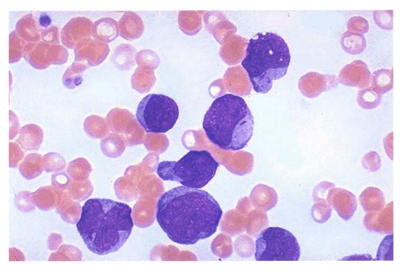

開卷有益 ／
醫師 ／ 醫學（二）（包括微生物免疫學、寄生蟲學、藥理學、病理學、公共衛生學等科目知識及其臨床之應用） ／ 107 年第 2 次107 年第 2 次醫師醫學（二）（包括微生物免疫學、寄生蟲學、藥理學、病理學、公共衛生學等科目知識及其臨床之應用）試題與答案
這一頁是民國 107 年第 2 次醫師醫學（二）（包括微生物免疫學、寄生蟲學、藥理學、病理學、公共衛生學等科目知識及其臨床之應用）的整份歷屆試題，共 100 題，題目與標準答案出自考選部「國家考試試題及測驗式試題答案」開放資料，其中 100 題附有詳解。以下逐題列出題幹、選項與答案；要計時作答或記錄成績，請用線上練習。
考選部原始場次代碼：107100
線上作答這一科 →
全部 100 題
第 1 題
金黃色葡萄球菌（Staphylococcus aureus）是根據其菌體的那種成分被區分成11種血清型（serotypes）？
（A） 胜肽聚醣（peptidoglycan）（B） 蛋白質A（Protein A）（C） 脫皮毒素（Exfoliative toxins）（D） 莢膜多醣體（capsular polysaccharide）答案：（D）
詳解與考點 正解：金黃色葡萄球菌的「血清型」分類；血清型依表面抗原差異區分，金黃色葡萄球菌的 11 種血清型是依莢膜多醣體（capsular polysaccharide）而定，故選 D。莢膜可幫助細菌抵抗吞噬，也是可供血清學辨識的抗原。
A：胜肽聚醣（peptidoglycan）是革蘭氏陽性菌細胞壁的重要骨架，但不是本題所問用以區分這些血清型的成分。
B：蛋白質 A（Protein A）可與 IgG 的 Fc 部位結合、干擾調理作用，是金黃色葡萄球菌的重要毒力因子；它看似很具鑑別性，但不是血清型分類依據。
C：脫皮毒素（exfoliative toxins）與葡萄球菌性燙傷樣皮膚症候群相關，屬分泌毒素，不是菌體表面用於血清分型的抗原。
本題考點：血清型（serotype）依微生物表面抗原差異分類；金黃色葡萄球菌（Staphylococcus aureus）的莢膜多醣體（capsular polysaccharide）兼具免疫逃脫與血清學分類意義；蛋白質 A（Protein A）是抗吞噬毒力因子而非分型標記。
第 2 題
下列疾病中，何者與Epstein-Barr 病毒的感染最無關？
（A） 鼻咽癌（nasopharyngeal carcinoma）（B） 慢性骨髓性白血病（chronic myelogenous leukemia）（C） 霍金氏疾病（Hodgkin's disease）（D） 布奇氏淋巴瘤（Burkitt's lymphoma）答案：（B）
詳解與考點 正解：Epstein-Barr virus（EBV）相關腫瘤的配對；慢性骨髓性白血病（chronic myelogenous leukemia, CML）以 BCR::ABL1 融合基因為核心分子異常，與 EBV 最無關，故選 B。
A：鼻咽癌（nasopharyngeal carcinoma）尤其是未分化型，與 EBV 感染有明確關聯，故不是答案。
C：部分霍奇金氏淋巴瘤（Hodgkin lymphoma）可檢出 EBV，特別是某些組織學亞型與免疫功能低下情境；因此並非最無關。
D：Burkitt lymphoma 與 EBV 的關聯是經典考點，雖其特徵性轉位涉及 MYC，但 EBV 在地方性型別特別常見，故非答案。
本題考點：Epstein-Barr virus（EBV）相關腫瘤包括鼻咽癌、部分霍奇金氏淋巴瘤與 Burkitt lymphoma；慢性骨髓性白血病（CML）的核心異常是 BCR::ABL1 融合基因，而非 EBV。
第 3 題
下列細菌何者與食入受汙染的米飯而引起的食物中毒最為相關？
（A） 腸炎沙門氏菌（Salmonella enterica）（B） 創傷弧菌（Vibrio vulnificus）（C） 臘狀桿菌（Bacillus cereus）（D） 大腸桿菌（Escherichia coli）答案：（C）
詳解與考點 正解：「受汙染米飯」引起食物中毒，這是臘狀桿菌（Bacillus cereus）的典型情境，故選 C。其芽孢可在煮飯後存活，若熟飯保存不當而增殖，可形成毒素；臨床上常以嘔吐型食物中毒呈現。
A：腸炎沙門氏菌（Salmonella enterica）常與未熟禽蛋、肉品或受汙染食物相關，主要造成腸胃炎，但「隔夜或保溫不當的米飯」不是其經典線索。
B：創傷弧菌（Vibrio vulnificus）主要與生食海鮮或海水傷口暴露相關，尤其肝病者風險高，和米飯中毒不符。
D：大腸桿菌（Escherichia coli）不同病原型可引起腹瀉，但米飯保存不當所觸發的預形成毒素情境最應聯想到（C）臘狀桿菌。
本題考點：臘狀桿菌（Bacillus cereus）為產芽孢食物中毒菌；熟飯保存不當是其經典暴露史；食物中毒（food poisoning）須依食物來源、潛伏期與毒素機轉鑑別。
第 4 題
關於產志賀毒素大腸桿菌（Shiga toxin-producing Escherichia coli）的敘述，下列何者錯誤？
（A） 會導致經由食物傳播（food-borne）的疾病（B） 常引起人類嚴重感染症的血清型為O157:H7（C） 疾病嚴重時可能會引起血性腹瀉（bloody diarrhea）（D） 不產生stx1或stx2毒素答案：（D）
詳解與考點 正解：「產志賀毒素大腸桿菌」的定義；Shiga toxin-producing Escherichia coli（STEC）正是產生 stx1 或 stx2 所編碼志賀毒素的菌株，因此（D）稱不產生這些毒素與定義相反，故為錯誤敘述。
A：STEC 可經受汙染食物傳播，例如未充分加熱的食物或受汙染農產品，敘述正確，故非答案。
B：O157:H7 是造成嚴重人類感染的重要 STEC 血清型，為經典考點，故此敘述正確。
C：STEC 可造成出血性腸炎，嚴重時出現血性腹瀉（bloody diarrhea）；它看似只是一般腹瀉菌，但其毒素性黏膜傷害正可導致此表現，故非答案。
本題考點：產志賀毒素大腸桿菌（STEC）以 stx1 或 stx2 毒素為定義特徵；O157:H7 是重要血清型；感染可經食物傳播並造成出血性腸炎（hemorrhagic colitis）。
第 5 題
15歲男生是學校游泳隊的成員，每日至少泳訓2小時，因左耳疼痛難耐而至耳鼻喉科就診，醫師檢查發現外耳發炎。經微生物培養鑑定為β型溶血，不發酵葡萄糖的細菌。最有可能是被下列何種細菌所感染？
（A） 草綠群鏈球菌（Viridans streptococci）（B） 表皮葡萄球菌（Staphylococcus epidermidis）（C） 肺炎鏈球菌（Streptococcus pneumoniae）（D） 綠膿桿菌（Pseudomonas aeruginosa）答案：（D）
詳解與考點 正解：游泳者反覆接觸水環境而有外耳炎，加上「β 溶血、不發酵葡萄糖」的培養特徵，最符合綠膿桿菌（Pseudomonas aeruginosa），故選 D。它是非發酵革蘭氏陰性桿菌，也是游泳者外耳炎（swimmer's ear）的典型病原。
A：草綠群鏈球菌（Viridans streptococci）為革蘭氏陽性球菌，並非不發酵葡萄糖的非發酵桿菌，也不是游泳者外耳炎的典型病原。
B：表皮葡萄球菌（Staphylococcus epidermidis）是革蘭氏陽性球菌與皮膚常在菌，常見於植入物相關感染，和本題水暴露及培養特徵不符。
C：肺炎鏈球菌（Streptococcus pneumoniae）主要引起肺炎、中耳炎與腦膜炎，且為革蘭氏陽性雙球菌，不能解釋不發酵葡萄糖的線索。
本題考點：游泳者外耳炎（otitis externa）常見病原為綠膿桿菌（Pseudomonas aeruginosa）；非發酵革蘭氏陰性桿菌（nonfermenting gram-negative bacilli）的培養特徵；β 溶血須與細菌的革蘭氏染色及代謝特性合併判讀。
第 6 題
下列那一種微生物主要在人類細胞內繁殖，且可引起透過性行為傳染的疾病？
（A） 傷寒桿菌 （Salmonella Typhi）（B） 杜克氏嗜血桿菌 （Haemophilus ducreyi）（C） 普氏立克次體（Rickettsia prowazekii）（D） 砂眼披衣菌（Chlamydia trachomatis）答案：（D）
詳解與考點 正解：「主要在人類細胞內繁殖」且「經性行為傳染」；砂眼披衣菌（Chlamydia trachomatis）為專性細胞內病原，可造成非淋菌性尿道炎、子宮頸炎與骨盆腔炎，故選 D。其生活史在宿主細胞內於感染性 elementary body 與增殖性 reticulate body 間轉換。
A：傷寒桿菌（Salmonella Typhi）可存活於細胞內，但主要經糞口途徑傳播，不是典型性傳染病原。
B：杜克氏嗜血桿菌（Haemophilus ducreyi）可經性接觸造成軟性下疳，但不是如披衣菌般主要依賴宿主細胞內繁殖。
C：普氏立克次體（Rickettsia prowazekii）是專性細胞內菌，但主要由體蝨傳播，不能同時滿足性傳染的條件。
本題考點：砂眼披衣菌（Chlamydia trachomatis）是專性細胞內菌（obligate intracellular bacterium）；其 elementary body 與 reticulate body 生活史；性傳染感染症（sexually transmitted infections）的病原鑑別。
第 7 題
40歲男性有肝硬化病史，至海邊釣魚，因赤腳，右腳皮膚不慎被石頭割破流血，翌日在傷口附近出現紅腫與水泡（bullae），覺得疼痛難耐，經醫師診斷為傷口感染所引起的組織壞死（tissue necrosis），他最有可能被下列何種細菌感染？
（A） 傷寒沙門氏桿菌（Salmonella Typhi）（B） 鮑曼不動桿菌（Acinetobacter baumannii）（C） 霍亂弧菌（Vibrio cholerae）（D） 創傷弧菌（Vibrio vulnificus）答案：（D）
詳解與考點 正解：肝硬化患者在海邊赤腳受傷，隔日迅速出現劇痛、紅腫、水泡與組織壞死，是創傷弧菌（Vibrio vulnificus）傷口感染的典型組合，故選 D。慢性肝病會增加侵襲性創傷弧菌感染的風險，病程可迅速惡化為壞死性軟組織感染與敗血症。
A：傷寒沙門氏桿菌（Salmonella Typhi）經糞口途徑造成腸熱病，與海水傷口後的水泡性壞死不符。
B：鮑曼不動桿菌（Acinetobacter baumannii）常見於醫療照護相關感染，並非海水暴露合併肝病的經典病原。
C：霍亂弧菌（Vibrio cholerae）主要造成水樣腹瀉，不能解釋局部傷口迅速壞死。
本題考點：創傷弧菌（Vibrio vulnificus）與海水或海鮮暴露相關；慢性肝病（chronic liver disease）是嚴重感染高風險因子；水泡性壞死性軟組織感染（necrotizing soft-tissue infection）須辨識其快速進展。
第 8 題
有關非密螺旋體（nontreponemal）及密螺旋體（treponemal）梅毒血清學試驗結果的判讀，下列敘述何者錯誤？
（A） 有些紅斑性狼瘡（SLE）患者會出現長期非密螺旋體試驗偽陽性反應（B） 愛滋病（AIDS）患者以密螺旋體試驗為陰性反應時，仍無法排除感染梅毒螺旋體（Treponema pallidum）的可能性（C） 患者的生殖器出現潰瘍時，若非密螺旋體試驗結果為陰性，則可排除梅毒螺旋體感染的可能（D） 監測治療梅毒過程，密螺旋體試驗相對於非密螺旋體試驗較不易受到治療的影響答案：（C）
詳解與考點 正解：生殖器潰瘍合併非密螺旋體試驗陰性；早期梅毒可尚未產生足量抗體，亦可能有前帶效應等檢驗限制，不能僅憑一次陰性結果排除梅毒螺旋體感染。因此（C）的「可排除」過度絕對，為錯誤敘述，故選 C。
A：紅斑性狼瘡（SLE）可造成非密螺旋體試驗偽陽性，且可能持續存在；因其測的是非特異性抗體反應，敘述正確。
B：AIDS 患者免疫反應可能不典型，密螺旋體試驗陰性仍不能完全排除梅毒；此敘述正確，故非答案。
D：密螺旋體試驗多在感染後長期維持陽性，較不反映治療反應；相對而言，非密螺旋體試驗滴度較適於追蹤療效，故（D）敘述正確。
本題考點：非密螺旋體試驗（nontreponemal test）易有偽陽性且可用滴度追蹤療效；密螺旋體試驗（treponemal test）較具特異性但常長期陽性；梅毒（syphilis）須合併臨床表現與適當複檢判讀，單次陰性不能絕對排除。
第 9 題
關於肺炎黴漿菌（Mycoplasma pneumoniae）所引起的肺炎，下列何者正確？
（A） 患者可使用青黴素（penicillin）、頭芽孢素（cephalosporin）或萬古黴素（vancomycin）類抗生素治療（B） 此菌具有P1黏附蛋白（P1 adhesin），能導致呼吸道中具有纖毛的上皮細胞（ciliated epithelial cells）遭致破壞（C） 可將患者痰液以革蘭氏染色（Gram stain）後，進行顯微鏡觀察是否有分枝纖細狀桿菌（D） 可藉由吸入受感染鳥類的乾燥糞便或其呼吸道分泌物而得到感染答案：（B）
詳解與考點 正解：肺炎黴漿菌缺乏細胞壁但具有 P1 adhesin；P1 黏附蛋白使 Mycoplasma pneumoniae 附著於呼吸道纖毛上皮，進而造成纖毛功能受損與上皮傷害，故選 B。
A：肺炎黴漿菌沒有肽聚醣細胞壁，青黴素、頭芽孢素與萬古黴素等作用於細胞壁的藥物無效；這是最常見的機轉誘答。
C：此菌因無細胞壁而不易以革蘭氏染色觀察，且不呈現分枝纖細狀桿菌；該形態較會聯想到其他病原，故錯。
D：吸入受感染鳥類乾燥糞便或呼吸道分泌物是鸚鵡熱披衣菌（Chlamydia psittaci）的典型傳播方式，不是肺炎黴漿菌。
本題考點：肺炎黴漿菌（Mycoplasma pneumoniae）缺乏細胞壁；P1 adhesin 介導纖毛上皮黏附與傷害；非典型肺炎（atypical pneumonia）的病原需以傳播途徑、染色與抗菌藥作用位點鑑別。
第 10 題
下列何者非葡萄球菌菌種（Staphylococcus species）所造成的主要疾病？
（A） 食物中毒（food poisoning）（B） 膿皰瘡（impetigo）（C） 皮膚燙傷樣綜合徵狀（scalded skin syndrome）（D） 胃潰瘍（gastric ulcer）答案：（D）
詳解與考點 正解：「非葡萄球菌造成的主要疾病」；胃潰瘍（gastric ulcer）最典型與幽門螺旋桿菌（Helicobacter pylori）及酸相關機制有關，不是葡萄球菌的主要疾病，故選 D。
A：金黃色葡萄球菌可產生耐熱腸毒素，引起起病快速的食物中毒（food poisoning），故非答案。
B：膿皰瘡（impetigo）可由金黃色葡萄球菌引起，雖亦可能見於化膿性鏈球菌感染，仍是葡萄球菌重要皮膚疾病。
C：葡萄球菌性燙傷樣皮膚症候群（staphylococcal scalded skin syndrome）由金黃色葡萄球菌脫皮毒素引起，故與葡萄球菌直接相關。
本題考點：金黃色葡萄球菌（Staphylococcus aureus）可造成食物中毒、膿皰瘡與燙傷樣皮膚症候群；葡萄球菌腸毒素（staphylococcal enterotoxin）與脫皮毒素（exfoliative toxin）的臨床效應；胃潰瘍（gastric ulcer）的常見病因為幽門螺旋桿菌與酸相關傷害。
第 11 題
下列那一項臨床檢驗項目，是常規做為評估以高效能雞尾酒治療愛滋病（AIDS）效果的主要指標？
（A） p24抗原（antigen）之測定（B） CD4:CD8 T-cell比例之測定（C） 血漿中人類免疫缺陷病毒（HIV）病毒量之測定（D） HIV抗原/抗體（antigen/antibody）組合測試（combo test）答案：（C）
詳解與考點 正解：評估高效能抗反轉錄病毒治療效果的「主要指標」；血漿 HIV 病毒量直接反映病毒複製受抑制的程度，因此是常規療效監測的主要檢驗，故選 C。CD4 細胞數亦有臨床價值，但本題（B）所列比值不是主要療效指標。
A：p24 antigen 可協助早期 HIV 感染檢測，但不作為抗病毒治療效果的常規主要監測指標。
B：CD4:CD8 T-cell 比例可反映免疫狀態，恢復也可能緩慢，但其變化不如血漿病毒量直接用於評估病毒抑制效果。
D：HIV antigen/antibody combo test 用於診斷與篩檢 HIV 感染，不用於追蹤既確診病人的治療病毒學反應。
本題考點：抗反轉錄病毒治療（antiretroviral therapy）的病毒學監測以 HIV viral load 為主；p24 antigen 與抗原／抗體組合檢測（antigen/antibody combo test）主要用於診斷；免疫學監測（immunologic monitoring）不能取代病毒量評估。
第 12 題
在器官移植之後，下列那一種病毒最可能造成器官移植感染，且對於抗病毒藥物很容易產生抗藥性？
（A） 腺病毒（Adenovirus）（B） 人類巨細胞病毒 （Cytomegalovirus）（C） B型肝炎病毒（Hepatitis B virus）（D） 冠狀病毒SARS CoV本題送分，無標準答案
詳解與考點 本題官方公告送分。
第 13 題
下列何種病毒，最不會經由性接觸而傳染？
（A） 第一型人類嗜Ｔ淋巴球病毒（Human T-cell lymphotropic virus-1, HTLV-1）（B） 巨細胞病毒（Cytomegalovirus, CMV）（C） A型肝炎病毒（Hepatitis A virus, HAV）（D） C型肝炎病毒（Hepatitis C virus, HCV）答案：（C）
詳解與考點 正解：官方答案為 C；依本題命題年代的教科書式分類，A 型肝炎病毒（HAV）歸為糞口傳播，C 型肝炎病毒（HCV）則列為可經性接觸傳播，官方答案為 C。惟實際性傳播風險會受性行為與暴露情境影響：HAV 可經特定性行為造成糞口傳播，HCV 的性傳播效率亦相對低，兩者的排序具有爭議。
A：HTLV-1 可透過性接觸、母乳及血液傳播，性傳播並非罕見途徑，故不是答案。
B：巨細胞病毒（CMV）可由體液傳播，包括性接觸，故非最不會經性接觸傳播者。
D：C 型肝炎病毒（HCV）以血液傳播最重要，性接觸效率較低但仍可能發生，尤其特定高風險暴露下；因此不能稱完全不會性傳播。
本題考點：A 型肝炎病毒（HAV）主要經糞口傳播；HTLV-1 與 CMV 可經性接觸傳播；C 型肝炎病毒（HCV）以血液傳播為主但性傳播風險受暴露情境影響。
第 14 題
關於腮腺炎（mumps）的敘述，下列何者錯誤？
（A） 是透過呼吸道上皮細胞傳染的疾病（B） 感染都只有呼吸道症狀，不會造成全身性的感染（C） 腮腺炎病毒可以存在尿液中（D） 腮腺炎病毒減毒疫苗的效果很好，是目前使用的三合一疫苗中的一種成分答案：（B）
詳解與考點 正解：腮腺炎不是侷限於呼吸道的局部感染；腮腺炎病毒先在呼吸道感染，之後可經病毒血症散播至腮腺及其他器官，並可造成睪丸炎、無菌性腦膜炎等全身性併發症。因此（B）稱只會有呼吸道症狀且不會全身感染，為錯誤敘述，故選 B。
A：腮腺炎經呼吸道分泌物傳播，病毒可先在呼吸道上皮相關部位複製，敘述方向正確。
C：腮腺炎病毒可在尿液中檢出，反映其可有全身性散播；此敘述正確，故非答案。
D：腮腺炎減毒活疫苗是 MMR 三合一疫苗的成分之一，對預防腮腺炎有效，故不是錯誤選項。
本題考點：腮腺炎（mumps）由呼吸道傳播並可造成病毒血症（viremia）；其全身性併發症包括睪丸炎與無菌性腦膜炎；MMR vaccine 含麻疹、腮腺炎與德國麻疹的減毒活疫苗成分。
第 15 題
有關病毒（viruses）複製的敘述，下列何者錯誤？
（A） 具外套膜（envelope）的病毒一般對環境的抗性較低（B） RNA病毒之複製大部分是在細胞質中進行（C） RNA病毒之複製大部分不需要宿主細胞的酵素（D） 具有外套膜的病毒主要藉由細胞溶解（lysis）而釋出細胞外本題送分，無標準答案
詳解與考點 本題官方公告送分。
第 16 題
巴西副球黴菌（Paracoccidioides brasiliensis） 酵母細胞之細胞壁中，下列那一種組成的含量和致病力最有關？
（A） 1,3-α-葡聚醣（1,3-α-glucan）（B） 1,3-β-葡聚醣（1,3-β-glucan）（C） 半乳甘露聚醣（Galactomannan）（D） 幾丁質（Chitin）答案：（A）
詳解與考點 正解：巴西副球黴菌酵母型細胞壁中與「致病力」最相關的成分；致病性菌株富含 1,3-α-glucan，此成分可遮蔽較易被宿主辨識的細胞壁結構並有助免疫逃脫，故選 A。
B：1,3-β-glucan 是多種真菌細胞壁常見成分，也可被宿主先天免疫辨識，但本題問的是巴西副球黴菌致病力最相關的特定組成，非此項。
C：半乳甘露聚醣（galactomannan）是某些真菌的細胞壁多醣與檢驗標記概念，但不是本題巴西副球黴菌毒力的關鍵配對。
D：幾丁質（chitin）是許多真菌細胞壁的結構成分，具有普遍性；它看似也是細胞壁成分，但不能特異說明本題所問的致病力差異。
本題考點：巴西副球黴菌（Paracoccidioides brasiliensis）的酵母型細胞壁；1,3-α-glucan 與真菌毒力（virulence）及免疫逃脫；真菌細胞壁成分包括 β-glucan、chitin 與多醣複合物。
第 17 題
下列那一種感染症最易於組織中見到厚壁、棕色之硬化體（sclerotic bodies）？
（A） 黑癬（Tinea nigra）（B） 孢子絲菌病（Sporotrichosis）（C） 產色芽生黴菌症（Chromoblastomycosis）（D） 皮下黑化真菌病（Subcutaneous phaeohyphomycosis）答案：（C）
詳解與考點 正解：組織中的厚壁、棕色硬化體（sclerotic bodies），又稱 muriform bodies 或 Medlar bodies；這是產色芽生黴菌症（chromoblastomycosis）的特徵性組織形態，故選 C。此病由黑色真菌經外傷植入皮膚後引起慢性皮下感染。
A：黑癬（tinea nigra）為表淺角質層感染，通常表現為手掌或足底色素斑，不會在深部組織形成硬化體。
B：孢子絲菌病（sporotrichosis）組織中較典型的是雪茄狀酵母菌，與厚壁棕色的 muriform bodies 不同。
D：皮下黑化真菌病（subcutaneous phaeohyphomycosis）可見色素性菌絲或酵母樣型態，但缺乏產色芽生黴菌症特有的硬化體。
本題考點：產色芽生黴菌症（chromoblastomycosis）是黑色真菌（dematiaceous fungi）造成的慢性皮下感染；硬化體（sclerotic bodies/muriform bodies）是其病理診斷特徵；孢子絲菌病（sporotrichosis）的典型組織型態為雪茄狀酵母菌。
第 18 題
下列那一種黏著分子（adhesion molecules）能存在於白血球上，使得白血球可以黏附於血管內皮（bloodvessel endothelium）上？
（A） E-selectins（B） ICAMs（C） Integrins（D） Fibronectin答案：（C）
詳解與考點 正解：「存在於白血球上」並使其黏附血管內皮；白血球表面的 integrins 在活化後可與內皮細胞上的 ICAMs 結合，介導牢固黏附（firm adhesion），故選 C。
A：E-selectins 主要表現在受活化的血管內皮細胞上，與白血球配體進行初步捕捉與滾動（rolling），不是本題所問白血球表面的黏著分子。
B：ICAMs 主要位於血管內皮細胞表面，是白血球 integrins 的配體；它看似直接參與黏附，但位置在內皮而非白血球。
D：Fibronectin 是細胞外基質與黏著相關蛋白，可參與細胞－基質互動，但不是白血球對內皮牢固黏附的主要表面分子。
本題考點：白血球外滲（leukocyte extravasation）先由 selectins 介導滾動；integrins 位於白血球並介導牢固黏附（firm adhesion）；ICAMs 位於內皮細胞並作為 integrins 的配體。
第 19 題
T細胞受器（T cell receptor, TCR）向細胞內傳遞訊息主要依賴下列那一種分子？
（A） TCR（B） MHC（C） CD2（D） CD3答案：（D）
詳解與考點 正解：T cell receptor（TCR）如何把辨識到的抗原訊息傳入細胞；TCR 本身胞質尾端太短，主要依賴與它結合的 CD3 複合體之訊號傳遞鏈進行細胞內訊息傳遞，故選 D。
A：TCR 負責辨識由 MHC 呈現的抗原胜肽，但本身不具足以完成主要胞內訊號傳遞的結構，故不能單獨作答。
B：MHC 位於抗原呈現細胞表面，功能是呈現抗原胜肽給 TCR，而不是在 T 細胞內傳遞訊號。
C：CD2 是 T 細胞表面的共刺激與黏著相關分子，可促進細胞間互動，但不是 TCR 主要訊號傳遞所必需的 CD3 複合體。
本題考點：T cell receptor（TCR）負責抗原辨識；CD3 complex 負責 TCR 的主要細胞內訊號傳遞；MHC（major histocompatibility complex）負責向 T 細胞呈現抗原胜肽。
第 20 題
有位感染Mycobacterium leprae（M. leprae）的病人前來就診，經過檢驗發現血液中對抗M. leprae的抗體效價很高，而寄生在巨噬細胞內的M. leprae很多，臨床症狀顯示有嚴重的組織破壞，下列那種細胞的活化最有可能與病人臨床症狀有關？
（A） 第一型輔助性T細胞（TH1）（B） 第二型輔助性T細胞（TH2）（C） 第三型輔助性T細胞（TH3）（D） 調節性T細胞（regulatory T cell）答案：（B）
詳解與考點 正解：題幹的關鍵是抗體效價高、巨噬細胞內菌量多且組織破壞嚴重，代表偏向體液免疫而未能有效控制胞內病原。TH2 活化會促進 B 細胞產生抗體，但對活化巨噬細胞殺滅胞內 M. leprae 的效果不足；在漢森病中，此型免疫偏向與瀰漫菌量及組織損傷相關，故選 B。
A：TH1 分泌的訊號可活化巨噬細胞，增強清除胞內分枝桿菌的能力；它看似會造成發炎，卻是較能侷限感染、菌量較低的有效細胞免疫反應，與題幹大量胞內菌不符。
C：TH3 並非本題用來解釋抗體偏高且胞內菌大量增生的主要輔助 T 細胞分型，不能取代 TH2 所代表的體液免疫偏向。
D：調節性 T 細胞主要抑制或調節免疫反應；雖可能影響感染控制，但無法直接說明題幹顯著抗體反應這項線索。
本題考點：輔助型 T 細胞（T helper cell）分化；胞內病原的細胞媒介免疫（cell-mediated immunity）；漢森病（leprosy）的 TH1/TH2 免疫偏向。
第 21 題
臨床上對預防肺結核病仍沒有令人滿意的疫苗。關於卡介苗的敘述下列何者錯誤？
（A） 是活的分枝桿菌（B） 無法引發細胞免疫反應（C） 是我國的免費例行疫苗之一（D） 施打後會增加結核菌素測驗的偽陽性率答案：（B）
詳解與考點 正解：題目問卡介苗（BCG）何者錯誤，關鍵在它是用來對抗結核菌的活性減毒分枝桿菌疫苗。BCG 能誘發以 T 細胞為主的細胞免疫反應，這正是抗結核防禦的重要機制；說它無法引發細胞免疫反應錯誤，故選 B。
A：BCG 由活的減毒牛分枝桿菌製成，仍屬活性分枝桿菌疫苗，敘述正確，故非答案。
C：BCG 為我國例行公費疫苗之一，敘述正確，故非本題錯誤選項。
D：接種 BCG 後可使結核菌素皮膚試驗出現陽性反應，因此會提高將其判為結核感染的偽陽性可能；此敘述正確。
本題考點：卡介苗（Bacille Calmette-Guérin, BCG）；活性減毒疫苗（live attenuated vaccine）；結核菌素皮膚試驗（tuberculin skin test）的偽陽性。
第 22 題
有一位免疫缺損的病患，他的吞噬細胞的細胞游走正常，吞噬細菌的能力也優良，但吞噬後無法將細菌殺死而經常引起明顯的組織發炎反應。下列疾病何者合乎這個敘述？
（A） 白血球黏著缺損（leukocyte adhesion deficiency）（B） 慢性肉芽腫病（chronic granulomatous disease）（C） Wiskott-Aldrich syndrome（D） DiGeorge syndrome答案：（B）
詳解與考點 正解：吞噬細胞游走與吞噬都正常，卻在吞噬後無法殺菌，是慢性肉芽腫病的典型定位。慢性肉芽腫病（CGD）因吞噬細胞氧化殺菌機制缺陷，無法產生足夠的活性氧物種以殺滅吞入的病原，反覆感染並引起肉芽腫性發炎，故選 B。
A：白血球黏著缺損的核心是白血球無法有效黏附血管內皮並游走到感染處；題幹已明示細胞游走正常，因此不符。
C：Wiskott-Aldrich syndrome 是結合濕疹、血小板低下與免疫缺陷的疾病，並非以吞噬後氧化殺菌失敗為特徵。
D：DiGeorge syndrome 主要為胸腺發育不全造成 T 細胞缺陷；它看似也會反覆感染，卻無法解釋吞噬細胞功能測試中「吞得到但殺不死」的特異表現。
本題考點：慢性肉芽腫病（chronic granulomatous disease, CGD）；吞噬細胞氧化殺菌（oxidative killing）；先天性免疫缺陷（primary immunodeficiency）。
第 23 題
傳統補體路徑（classical complement pathways）早期之補體如C1，C2，C4缺乏時，會產生下列何種現象？
（A） 影響到mannose-binding lectin之缺乏，易有兒童時期之感染（B） 無法清除immune complex，而有immune complex disease（C） 易有pyogenic bacteria之感染（D） 易有Pneumocystis jirovecii（先前稱Pneumocystis carinii）感染本題送分，無標準答案
詳解與考點 本題官方公告送分。
第 24 題
關於嗜伊紅性白血球和嗜中性白血球的異同，下列敘述何者正確？
（A） 嗜中性白血球含有過氧化酶，但嗜伊紅性白血球不含此酶（B） IL-5主要促進嗜伊紅性白血球的生成（C） 真核寄生蟲感染時嗜中性白血球反應較強（D） CCR3在嗜中性白血球表現較多答案：（B）
詳解與考點 正解：題幹比較嗜伊紅性與嗜中性白血球，最具鑑別力的是 IL-5 對嗜伊紅性白血球的作用。IL-5 主要促進嗜伊紅性白血球的分化、生成與活化，因此 B 正確。
A：嗜中性白血球與嗜伊紅性白血球都可含有過氧化酶；嗜伊紅性白血球的顆粒亦具有過氧化酶相關的殺菌蛋白，並非不含此酶。
C：寄生蟲感染，尤其蠕蟲感染，較具代表性的反應是嗜伊紅性白血球增多與活化，而非嗜中性白血球反應較強。
D：CCR3 是嗜伊紅性白血球對 eotaxin 等趨化訊號的重要受體，表現較多的是嗜伊紅性白血球，不是嗜中性白血球。
本題考點：IL-5（interleukin-5）；嗜伊紅性白血球（eosinophil）；寄生蟲感染的第二型免疫反應（type 2 immunity）。
第 25 題
目前分析人類基因（variant alleles）與自體免疫疾病致病性之相關，是查出此基因在某自體免疫疾病病患者中的存在比例，再與根據於一般族群之期望值做比較，而得到本基因（variant alleles）在自體免疫致病性之「相對危險值」（relative risk）。目前查出有較高的「相對危險值」的基因類別為下列那一項？
（A） 人類白血球抗原（human leukocyte antigens）基因（B） GM-CSF基因（C） CD4基因（D） Small GTP-binding protein cdc42基因答案：（A）
詳解與考點 正解：題幹問自體免疫疾病中具有較高相對危險值的遺傳類別。人類白血球抗原基因（HLA genes）決定抗原呈現與 T 細胞辨識，許多自體免疫疾病與特定 HLA 等位基因有強關聯，因此 A 最符合。
B：GM-CSF 參與造血與免疫細胞功能，但並非多數自體免疫疾病最具代表性、相對危險值最高的遺傳類別。
C：CD4 對輔助型 T 細胞功能重要，但題目問的是跨多種自體免疫疾病最明確的遺傳關聯，HLA 區域遠較具代表性。
D：small GTP-binding protein cdc42 參與細胞骨架與訊號傳遞，並非自體免疫遺傳風險中經典且最強的基因類別。
本題考點：人類白血球抗原（human leukocyte antigen, HLA）；自體免疫疾病（autoimmune disease）的遺傳易感性；相對危險值（relative risk）。
第 26 題
50餘歲女性出現多個關節腫脹、疼痛，主要在雙手近端指間關節（PIPs）、腕關節、膝關節等，檢查結果為類風濕性關節炎（rheumatoid arthritis），其特性為何？
（A） 為關節組織受侵犯，因自體免疫性淋巴細胞反應及自體免疫抗體所致（B） 因巨噬細胞功能低下所致之關節病變（C） 為風濕熱（rheumatic fever）表現之一部分（D） 為感染症之直接後遺症，引起全身關節受犯答案：（A）
詳解與考點 正解：雙側近端指間、腕與膝等多關節腫痛是類風濕性關節炎的典型關節炎型態。其病理核心為自體反應性淋巴細胞與自體抗體引起慢性滑膜發炎，進而破壞關節組織，故選 A。
B：類風濕性關節炎不是由巨噬細胞功能低下所致；巨噬細胞反而可參與滑膜發炎與組織破壞。
C：風濕熱是鏈球菌感染後的免疫相關疾病，可有游走性關節炎，但不是類風濕性關節炎的組成部分。
D：感染後關節炎容易與本題混淆，卻通常有特定感染前驅情境；類風濕性關節炎不是感染症直接後遺症，而是慢性自體免疫性疾病。
本題考點：類風濕性關節炎（rheumatoid arthritis）；自體免疫（autoimmunity）；慢性滑膜炎（chronic synovitis）。
第 27 題
下列有關「腫瘤細胞逃避宿主CD8淋巴細胞攻擊」的敘述，那一項錯誤？
（A） 腫瘤細胞抑制本身MHC（major histocompatibility complex）class II分子的表現（B） 腫瘤細胞不表現可引發免疫反應的抗原（C） 腫瘤細胞可分泌抑制T細胞活化的細胞激素（D） 腫瘤細胞群能形成特殊環境不讓CD8淋巴細胞浸潤答案：（A）
詳解與考點 正解：題目問逃避 CD8 淋巴細胞攻擊的錯誤機制。CD8 T 細胞辨識的是腫瘤細胞表面的 MHC class I 所呈現抗原，不是 MHC class II；抑制 MHC class II 表現不能構成主要的 CD8 逃脫機制，故選 A。
B：腫瘤若不表現或失去可被辨識的腫瘤抗原，CD8 T 細胞便缺乏靶標，是可行的免疫逃脫機制。
C：腫瘤可分泌抑制 T 細胞活化的細胞激素，營造免疫抑制狀態，因而削弱 CD8 T 細胞效應。
D：腫瘤微環境可妨礙 CD8 T 細胞浸潤；它看似不是腫瘤細胞本身的分子改變，卻確實能使效應細胞無法接近腫瘤。
本題考點：CD8 T 細胞（cytotoxic T lymphocyte）；MHC class I 抗原呈現（antigen presentation）；腫瘤免疫逃脫（tumor immune evasion）。
第 28 題
目前使用單株抗體的生物製劑治療多種自體免疫病及其他多種疾病，都有長足的進步。不過這些單株抗體製劑都要有擬人化（humanized）的步驟，才能用於人體。這個步驟為何？
（A） 先與人類補體結合，是為擬人化步驟（B） 先通過存有移除型抗體（depleting antibodies）的介面做為純化步驟，才得到擬人化的單株抗體（C） 通過存有抗淋巴球球蛋白（anti-lymphocyte globulin）的介面做為純化步驟（D） 將其他物種單株抗體基因的互補決定區域（complementary-determining regions, CDRs）部分，轉殖到人類單株抗體基因的互補決定區域（CDRs）部分答案：（D）
詳解與考點 正解：異種來源單株抗體直接用於人體容易引起抗藥物免疫反應；擬人化的關鍵是保留決定抗原結合特異性的 CDR，並置於人類抗體的框架中。D 所述以其他物種抗體的互補決定區域移入人類單株抗體基因的作法，最符合此 CDR grafting 概念，故選 D。
A：與人類補體結合屬抗體可能引發的效應功能，並非把異種抗體序列改造成較接近人類抗體的擬人化步驟。
B：depleting antibodies 的介面若作為純化用途，只是在分離產物，不能改變抗體可變區的人源化程度。
C：以抗淋巴球球蛋白介面純化同樣不是抗體基因或胺基酸序列的擬人化處理。
本題考點：擬人化單株抗體（humanized monoclonal antibody）；互補決定區域（complementarity-determining regions, CDRs）；CDR grafting。
第 29 題
蘇先生因個人養身因素而食用醃漬蝸牛及生蝸牛多年，日前急診就醫因疑似腦炎或腦膜腦炎而住院，經脊髓穿刺發現腦脊髓液（CSF）內有高數量白血球（1500/µL），並伴隨有嗜酸性白血球增多症（eosinophilia）。依據上述結果，蘇先生最可能感染下列何種寄生蟲？
（A） 旋毛蟲（Trichinella spiralis）（B） 廣節裂頭絛蟲（Diphyllobothrium latum）（C） 棘顎口線蟲（Gnathostoma spinigerum）（D） 廣東住血線蟲（Angiostrongylus cantonensis）答案：（D）
詳解與考點 正解：生食或食用醃漬蝸牛後出現腦膜腦炎，加上腦脊髓液嗜酸性白血球增多，是廣東住血線蟲感染的典型組合。人類誤食含幼蟲的蝸牛或蛞蝓後，幼蟲可侵犯中樞神經造成嗜酸性腦膜炎，故選 D。
A：旋毛蟲常與未熟肉品相關，主要表現為肌肉疼痛、發燒與嗜酸性白血球增多，並非蝸牛暴露後嗜酸性腦膜炎的典型病原。
B：廣節裂頭絛蟲多與生食淡水魚相關，常見腸道寄生或維生素 B12 缺乏，與本題暴露途徑及中樞神經表現不符。
C：棘顎口線蟲可造成幼蟲移行與嗜酸性白血球增多，偶可侵犯中樞神經；但蝸牛暴露合併嗜酸性腦膜炎最強烈指向（D）廣東住血線蟲。
本題考點：廣東住血線蟲（Angiostrongylus cantonensis）；嗜酸性腦膜炎（eosinophilic meningitis）；蝸牛與蛞蝓媒介的寄生蟲感染。
第 30 題
做皮下切片（skin snips）檢查微絲蟲（microfilaria）是診斷下列何種寄生蟲感染的重要依據？
（A） 羅阿絲蟲（Loa loa）（B） 蟠尾絲蟲（Onchocerca volvulus）（C） 麥地那線蟲（Dracunculus medinensis）（D） 馬來亞絲蟲（Brugia malayi）答案：（B）
詳解與考點 正解：皮下切片找微絲蟲是蟠尾絲蟲感染的重要診斷方法，因其微絲蟲主要分布在皮膚與皮下組織，而非周邊血液。取 skin snips 後可檢出逸出的微絲蟲，故選 B。
A：羅阿絲蟲的微絲蟲可在周邊血液出現，檢查血液較具代表性，不是以皮下切片為主要依據。
C：麥地那線蟲常以皮膚水泡中成蟲排出幼蟲的臨床表現辨識，並非以 skin snips 檢出微絲蟲作為典型診斷。
D：馬來亞絲蟲屬淋巴絲蟲病，微絲蟲的檢查重點為周邊血液，與蟠尾絲蟲的皮膚分布不同。
本題考點：蟠尾絲蟲（Onchocerca volvulus）；微絲蟲（microfilaria）；皮下切片（skin snips）診斷。
第 31 題
下列有關曼氏血吸蟲（Schistosoma mansoni）感染之敘述，那些是錯誤的？①可由糞便檢查到具尾刺（terminal spine）的蟲卵而確診 ②病患在慢性感染期較易引起左葉肝臟腫大 ③病患可能因生食水螺，其囊幼（metacercaria）進入體內而感染
（A） 僅①②（B） 僅①③（C） 僅②③（D） ①②③答案：（B）
詳解與考點 正解：本題要判斷三句中哪些錯誤。曼氏血吸蟲蟲卵的特徵是側棘，不是尾刺，故①錯；人類經含尾動幼蟲的水接觸而由皮膚侵入，不是生食水螺及囊幼感染，故③錯。②所述慢性感染可見左葉肝腫大可成立，因此錯誤的是①③，對應 B。
A：此組合把②也列為錯誤，卻忽略慢性曼氏血吸蟲病的肝臟纖維化與肝葉腫大表現，故不對。
C：此組合漏掉①。尾刺卵較符合其他血吸蟲的形態描述；曼氏血吸蟲卵為側棘，①明確錯誤。
D：此組合把②誤判為錯誤；①與③雖錯，但②可成立，因此不是三句皆錯。
本題考點：曼氏血吸蟲（Schistosoma mansoni）；蟲卵形態（egg morphology）；尾動幼蟲（cercaria）經皮膚感染。
第 32 題
人類食用未熟或生的帶蟲豬肉，最不可能罹患以下何種寄生蟲病？
（A） 旋毛蟲症（trichinellosis）（B） 囊蟲症（cysticercosis）（C） 肺吸蟲症（paragonimiasis）（D） 包蟲症（hydatid disease）本題送分，無標準答案
詳解與考點 本題官方公告送分。
第 33 題
下列之寄生蟲配對中，何者在患者組織切片皆可能檢出其囊體期（cyst stage）？
（A） 哈氏阿米巴（Entamoeba hartmanni）及棘阿米巴（Acanthamoeba spp.）（B） 棘阿米巴（Acanthamoeba spp.）及痢疾阿米巴（Entamoeba histolytica）（C） 棘阿米巴（Acanthamoeba spp.）及巴氏阿米巴（Balamuthia mandrillaris）（D） 棘阿米巴（Acanthamoeba spp.）及福氏內格里阿米巴（Naegleria fowleri）答案：（C）
詳解與考點 正解：題目限定患者的組織切片中兩者都可能檢出囊體期。棘阿米巴與巴氏阿米巴都可在組織中形成或檢出囊體，尤其在肉芽腫性阿米巴腦炎相關組織中可見，故選 C。
A：哈氏阿米巴為腸道非致病阿米巴，囊體主要與糞便檢體相關，並非典型在患者組織切片中檢出囊體的病原。
B：痢疾阿米巴侵入組織時主要以滋養體造成破壞，其囊體不會作為組織侵襲期的典型切片發現。
D：福氏內格里阿米巴可造成原發性阿米巴腦膜腦炎，但其在人體組織中主要為滋養體，沒有可作為組織切片診斷的囊體期；這是它與（C）巴氏阿米巴的關鍵差異。
本題考點：自由生活阿米巴（free-living amoebae）；棘阿米巴（Acanthamoeba spp.）；巴氏阿米巴（Balamuthia mandrillaris）的囊體期（cyst stage）。
第 34 題
人類感染恙蟲病（scrub typhus）主要是經由下列何者之叮咬而感染？
（A） 感染性成蜱（tick）（B） 感染性幼蜱（tick）（C） 感染性成蟎（mite）（D） 感染性幼蟎（mite）答案：（D）
詳解與考點 正解：恙蟲病的病媒是恙蟎，會叮咬人類並傳播 Orientia tsutsugamushi 的生活期是幼蟎。人類通常在草叢等環境被感染性幼蟎叮咬而感染，故選 D。
A：蜱可傳播多種疾病，但不是恙蟲病的主要病媒，且成蜱不是本題正確的傳播期。
B：幼蜱的確會叮咬人，但恙蟲病的媒介為蟎而非蜱，病媒分類即不符。
C：成蟎主要不以人類為宿主；恙蟲病的傳播重點是會吸食脊椎動物組織液的幼蟎。
本題考點：恙蟲病（scrub typhus）；恙蟎（chigger mite）；病媒傳播（vector-borne transmission）。
第 35 題
下列何種病媒滋生感染症較易藉由輸血途徑而造成人傳人感染？
（A） 巴西利什曼原蟲病（leishmaniasis braziliensis）（B） 萊姆病（Lyme disease）（C） 恙蟲病（scrub typhus）（D） 巴貝氏原蟲症（babesiosis）答案：（D）
詳解與考點 正解：巴貝氏原蟲寄生於紅血球內，帶原者的受感染紅血球可隨輸血製品移轉給受血者，因此巴貝氏原蟲症是較易經輸血造成人傳人感染的病媒感染症，故選 D。
A：巴西利什曼原蟲主要經砂蠅傳播，並非本題所問較典型的輸血傳播病原。
B：萊姆病由蜱傳播，其病原並不以紅血球內持續寄生為特徵，輸血傳播不是典型途徑。
C：恙蟲病由恙蟎叮咬傳播，病原主要在細胞內感染，與輸血傳播的流行病學特徵不符。
本題考點：巴貝氏原蟲症（babesiosis）；紅血球內寄生（intraerythrocytic parasitism）；輸血傳播（transfusion-transmitted infection）。
第 36 題
下列何者不是中央極限定理（central limit theorem）的涵義？
（A） 隨機樣本平均值（sample mean）之統計分布接近常態分布（normal distribution）（B） 隨機樣本平均值（sample mean）之統計分布接近布阿松分布（Poisson distribution）（C） 所有可能的隨機樣本平均值（sample mean）之平均值等於母群體（original population）平均值（D） 標準誤（standard error）取決於母群體（original population）標準差與樣本的大小（size of sample）答案：（B）
詳解與考點 正解：中央極限定理的重點是樣本數足夠時，樣本平均值的抽樣分布趨近常態分布，而不是趨近布阿松分布。布阿松分布描述計數型隨機變數的機率分布，並非中央極限定理對樣本平均值的結論，故選 B。
A：樣本平均值的抽樣分布在適當條件與足夠樣本數下接近常態分布，正是中央極限定理的核心。
C：樣本平均值的期望值等於母群體平均值，這是樣本平均值的無偏性質，與中央極限定理的抽樣分布概念相容，故非答案。
D：標準誤會隨母群體標準差增加而增大、隨樣本數增加而減小；它描述樣本平均值抽樣分布的離散程度，敘述正確。
本題考點：中央極限定理（central limit theorem）；抽樣分布（sampling distribution）；標準誤（standard error）。
第 37 題
對無母數分析的描述下列何者錯誤？
（A） 對資料的極端數值較為敏感（B） 不需假設資料呈常態分布（C） 統計檢定力較有母數分析低（D） 適合處理小樣本的分析本題送分，無標準答案
詳解與考點 本題官方公告送分。
第 38 題
醫師判讀一項檢查結果時必須知道該檢查的敏感度（sensitivity）。何謂敏感度？
（A） 檢查結果為陽性的病人中，確實有該項疾病的機率（B） 檢查結果為陰性的病人中，確實沒有該項疾病的機率（C） 有該項疾病的病人中，檢查結果為陽性的機率（D） 沒有該項疾病的病人中，檢查結果為陰性的機率答案：（C）
詳解與考點 正解：敏感度問的是「已經有病的人」被檢查正確抓到陽性的比例，即 P（檢查陽性｜有病）。因此有該項疾病的病人中檢查結果為陽性的機率是敏感度，故選 C。
A：檢查陽性者中確實有病的機率是陽性預測值，分母是檢查陽性者，不是所有有病者。
B：檢查陰性者中確實沒有病的機率是陰性預測值，會受疾病盛行率影響，並非敏感度。
D：沒有病者中檢查陰性的機率是特異度；它與敏感度看似對稱，但條件族群是無病者，故不能混用。
本題考點：敏感度（sensitivity）；特異度（specificity）；陽性預測值與陰性預測值（positive/negative predictive value）。
第 39 題
病例對照研究中，吸菸對口腔癌發生之勝算比值（odds ratio）為 2.0 倍。若健康對照個案之中有 25% 個案吸菸，則 400 名罹患口腔癌病患之中有多少名病患吸菸？
（A） 100（B） 160（C） 200（D） 240答案：（B）
詳解與考點 正解：勝算比 2.0 與對照組吸菸率 25%。對照組吸菸勝算＝25%／75%＝1/3；病例組吸菸勝算＝2.0×1/3=2/3；換回機率＝(2/3)／(1+2/3)＝2/5=40%。400 名病例中吸菸者＝400×40%＝160 名，故選 B。
A：100 名等於 25%，只是直接照搬對照組吸菸率，忽略病例組相對於對照組的勝算比為 2.0。
C：200 名等於 50%，把勝算比 2.0 誤當成吸菸機率可直接倍增；勝算與機率不是同一量，必須先由勝算換回機率。
D：240 名等於 60%，高估了勝算比對機率的轉換結果；病例組正確吸菸機率為 40%，不是 60%。
本題考點：勝算比（odds ratio）；勝算（odds）與機率（probability）的轉換；病例對照研究（case-control study）。
第 40 題
關於篩檢的描述何者錯誤？
（A） 公費篩檢政策實施當年，癌症的發生率通常會較往年上升（B） 推行子宮頸抹片篩檢會有效降低子宮頸癌死亡率（C） 癌症盛行率會高於發生率（D） 為減少癌症死亡率，應對各種癌症進行公費篩檢答案：（D）
詳解與考點 正解：「為減少癌症死亡率」卻主張對「各種癌症」一律公費篩檢。篩檢是否值得推行，須考量疾病負擔、可接受的篩檢工具、早期治療能否改善預後，以及偽陽性、過度診斷與資源成本；不是只要癌症就適合大規模篩檢。因此（D）的全稱主張錯誤，故選 D。
A：公費篩檢剛推行時，原先尚未診斷的既存個案會被提早發現，使登錄的發生率暫時上升；這是篩檢帶來的診斷提前與盛行個案檢出，敘述正確。
B：子宮頸抹片可發現癌前病變並及早處置，持續而有品質的篩檢能降低子宮頸癌死亡率，敘述正確。
C：癌症多為慢性病，個案從診斷到死亡或治癒通常會存續一段時間；在穩定族群中，盛行率約受發生率與病程長短共同影響，通常可高於年度發生率，敘述正確。
本題考點：篩檢原則（screening principles）須有明確疾病負擔、有效檢測及早期介入效益；發生率（incidence）衡量新發個案，盛行率（prevalence）衡量既存個案；過度診斷（overdiagnosis）是癌症篩檢的重要傷害。
第 41 題
某研究收集30人的收縮壓（mmHg）及年齡的隨機樣本資料，計算皮爾森氏相關係數（Pearson’s correlationcoefficient）得 0.7。假若同樣的資料，以血壓當依變項（Y；dependent variable），以年齡當自變項（X；independent variable），可得到直線迴歸線 。下列何者正確？
（A） b一定大於零（B） a一定小於零（C） 血壓的變化有70%可被年齡的變異所解釋（D） 平均每增加一歲，則收縮壓就增加0.7mmHg答案：（A）
詳解與考點 正解：Pearson 相關係數 r=0.7 為正值，而以年齡 X 預測收縮壓 Y 的簡單線性迴歸斜率 b 與 r 同號。因為 b=r×sY/sX，且兩個標準差皆為正，所以 b 必大於 0；年齡增加時，迴歸線預測的收縮壓上升，故選 A。
B：截距 a 是 X=0 時的預測收縮壓，其正負取決於量尺與樣本平均數，不能由 r=0.7 判定為負，故錯。
C：可被年齡解釋的變異比例是決定係數 r²＝0.7²＝0.49，即 49%，不是 70%；（C）把相關係數直接當成解釋比例，是最常見的誘答。
D：每增加 1 歲的預測收縮壓改變量是迴歸斜率 b，單位為 mmHg／歲；r=0.7 沒有 mmHg 單位，不能直接解讀成增加 0.7 mmHg，故錯。
本題考點：皮爾森相關係數（Pearson correlation coefficient）描述線性關聯方向與強度；簡單線性迴歸（simple linear regression）的斜率與 r 同號；決定係數（coefficient of determination）為 r²，表示模型解釋的 Y 變異比例。
第 42 題
自來水中之消毒副產物，主要為所加之氯與下列何類物質作用所產生？
（A） 有機物（B） 砷（C） 鉛（D） 硝酸鹽答案：（A）
詳解與考點 正解：自來水消毒時「所加之氯」與何物反應。原水中的天然有機物會與氯反應形成多種消毒副產物，例如三鹵甲烷；因此降低原水有機物或調整消毒處理，是控制此類副產物的方向，故選 A。
B：砷是可存在地下水中的無機污染物，並非氯化消毒主要生成消毒副產物所需的反應底物。
C：鉛通常來自管線、接頭或配水系統的溶出，與氯和有機前驅物反應生成消毒副產物的機制不同。
D：硝酸鹽多與農業肥料、污水或含氮物質氧化有關；雖是飲水水質污染物，卻不是本題所問氯化副產物的主要前驅物。
本題考點：消毒副產物（disinfection by-products）可在氯化過程生成；天然有機物（natural organic matter）是三鹵甲烷等的重要前驅物；飲用水處理（drinking-water treatment）須同時兼顧消毒效力與副產物控制。
第 43 題
空氣污染指標（PSI）與下列那五種不同污染物的濃度有關？
（A） SO3、CO、O3、NO2、PM10（B） SO2、CO2、O2、NO2、PM10（C） SO2、CO、O2、NO3、PM1.0（D） SO2、CO、O3、NO2、PM10答案：（D）
詳解與考點 正解：題目所稱的 PSI，其計算採用 5 項指標污染物：SO2、CO、O3、NO2 與 PM10。這些污染物各自換算成分項指標後，以其中最高值代表當時空氣污染程度，故選 D。
A：（A）的 SO3 不是 PSI 採用的氣態硫氧化物指標；看似只差一個下標，實際應為二氧化硫 SO2。
B：（B）把 CO 誤寫成 CO2，並把臭氧 O3 換成氧氣 O2；CO2 與 O2 都不屬於本題 PSI 的 5 項指標污染物。
C：（C）的 O2、NO3 與 PM1.0 均不符 PSI 的指標項目；正確的氮氧化物為 NO2，懸浮微粒為 PM10。
本題考點：污染標準指數（Pollutant Standards Index, PSI）以 SO2、CO、O3、NO2、PM10 評估空氣污染；分項指標（subindex）將濃度轉為可比較尺度；本題考的是 PSI 的歷史指標組成，須與其他空氣品質指標區分。
第 44 題
關於臭氧敘述，下列何者錯誤？
（A） 大多為直接由污染源排放之一級污染物（B） 夏天午後空氣中的臭氧濃度較其他時間高，尤其在工業區與都會區更為明顯（C） 平流層臭氧濃度太低，會增加紫外線暴露（D） 可以用於室內空氣品質之改善本題送分，無標準答案
詳解與考點 本題官方公告送分。
第 45 題
國際癌症研究機構（IARC）將流病資料不充分且動物資料有限之可能致癌物，列為那一類？
（A） 1（B） 2A（C） 2B（D） 3答案：（C）
詳解與考點 正解：官方答案為 C。題幹以「可能致癌」指向 IARC 第 2B 類；惟人類流行病學證據不充分且動物證據有限，僅憑這兩項並不足以唯一判定為 2B，在沒有其他支持性機轉或相關證據時可歸入第 3 類。因此本題的證據組合與官方分類間有爭議。
A：第 1 類要求對人類有足夠致癌證據；本題的人類資料僅為不充分，未達此標準。
B：第 2A 類為對人類「很可能致癌」（probably carcinogenic to humans），通常需要較強的動物證據或其他支持證據；題幹所列資料不足以直接判為 2A。
D：第 3 類是對人類致癌性「不可分類」；依證據組合的嚴格判讀，本題所列人類不充分與動物有限資料可有歸入第 3 類的空間，故不能僅以有限動物證據排除 D。
本題考點：IARC 致癌性評估（IARC carcinogenicity classification）整合人類與動物證據；第 2B 類為 possibly carcinogenic；證據組合的分類尚須考量其他支持性證據。
第 46 題
關於劑量反應評估之敘述，下列何者錯誤？
（A） 致癌性與非致癌性之劑量反應關係應分開描述（B） 致癌效應與非致癌效應皆有其閾值（threshold）（C） 致癌之效應以風險作為呈現（D） 閾值以下之劑量，預期將不會造成顯著損害答案：（B）
詳解與考點 正解：致癌效應與非致癌效應的劑量反應假設不同。非致癌毒性常以可觀察到無顯著不良效應的閾值概念評估；基因毒性致癌風險則通常採無閾值線性外推，以低劑量下的額外致癌風險呈現。因此（B）說兩者「皆有」閾值錯誤，故選 B。
A：致癌與非致癌終點的機轉、劑量反應模型及健康風險表達不同，應分開描述，敘述正確。
C：致癌物的健康影響通常以終生額外致癌風險表示，而非以單一安全閾值表示，敘述正確。
D：對採閾值模型的非致癌效應而言，低於閾值時預期不致造成顯著損害；這正是閾值評估的意義，敘述正確。
本題考點：劑量反應評估（dose-response assessment）連結暴露量與健康效應；閾值（threshold）常用於非致癌毒性；無閾值線性模型（linear no-threshold model）常用於基因毒性致癌風險的保守估計。
第 47 題
目前我國心理衛生工作主要的法源依據為何？
（A） 心理衛生法（B） 公共心理衛生法（C） 精神衛生法（D） 社區精神醫療保健法答案：（C）
詳解與考點 正解：我國心理衛生工作的「主要法源依據」。精神衛生法規範精神疾病防治、病人權益、社區照護及相關心理衛生措施，是本題所問的核心法源，故選 C。
A：我國並無以「心理衛生法」為名、作為本題所述主要法源的法律；名稱看似貼近題意，卻不是正式法源名稱。
B：「公共心理衛生法」不是本題所指我國心理衛生工作的主要法律名稱，故錯。
D：「社區精神醫療保健法」不是本題所指的主要法源；社區精神醫療保健是精神衛生工作的服務方向之一。
本題考點：精神衛生法（Mental Health Act）是我國精神衛生工作的主要法源；社區精神醫療（community mental health care）強調在地支持與持續照護；病人權益（patients’ rights）是精神衛生制度的重要面向。
第 48 題
社會流行病學強調疾病多層次的社會機制，研究設計時常需同時考慮「個體」與「群體」分析單位。此種同時考慮「個體」與「群體」的研究設計，可以避免下述何種研究上的謬誤或偏誤？
（A） 辛普森詭論（Simpson’s paradox）（B） 生態謬誤（ecological fallacy）（C） 選擇偏誤（selection bias）（D） 干擾偏誤（confounding bias）答案：（B）
詳解與考點 正解：同時把「個體」與「群體」列為分析單位。若只以群體平均暴露或疾病率推論個人風險，會把群體層級的關聯錯套到個體，此即生態謬誤；多層次設計可同時估計個體與群體脈絡，避免這種錯誤，故選 B。
A：辛普森詭論是資料分層前後關聯方向改變的現象，可由混雜或群組結構引起；多層次設計可幫助理解，但它不是本題「個體與群體併納」所直接要避免的特定謬誤。
C：選擇偏誤源於研究對象的納入或留存方式與暴露、結果有關，不能僅靠同時分析兩個層次就避免。
D：干擾偏誤來自第三變項同時與暴露、結果相關，須以研究設計或統計調整處理；它與生態謬誤的層級錯置不同。
本題考點：社會流行病學（social epidemiology）研究社會脈絡如何影響健康；多層次分析（multilevel analysis）同時處理個體與群體變項；生態謬誤（ecological fallacy）是由群體資料不當推論個人的錯誤。
第 49 題
依全民健康保險法第48條之規定，保險對象有下列情形之一者，免依全民健康保險法規定自行負擔費用，下列何者不在此範圍內？
（A） 重大傷病（B） 分娩（C） 中低收入戶（D） 山地離島地區之就醫答案：（C）
詳解與考點 正解：依題幹所指全民健康保險法第 48 條，問何者不屬於免自行負擔費用的列舉範圍。重大傷病、分娩及山地離島地區就醫均屬該條規範的免部分負擔情形；中低收入戶不是本題所列的免除事由，故選 C。
A：重大傷病病人因治療重大傷病相關疾病就醫時，屬免自行負擔費用的範圍，故不是答案。
B：分娩屬題幹所指法條列舉的免自行負擔費用情形，敘述正確。
D：山地離島地區就醫屬題幹所指法條列舉情形，目的在改善地理可近性障礙，故不是答案。
本題考點：全民健康保險部分負擔（National Health Insurance copayment）依法律列舉特定免除事由；重大傷病（catastrophic illness）與分娩（childbirth）屬常見免除情形；醫療可近性（health-care accessibility）是山地離島保障的政策理由。
第 50 題
以下關於醫療機構／醫院分類的敘述何者錯誤？
（A） 依所有權分為公立醫療機構、私立醫療機構、醫療法人及法人附設醫療機構四類（B） 依主治醫師雇用方式分為開放性醫院及閉鎖性醫院兩類（C） 依服務項目分為醫院、診所及其他醫療機構三類（D） 依是否具教學功能分為教學醫院及非教學醫院兩類答案：（B）
詳解與考點 正解：開放性與閉鎖性醫院的分類。（B）僅列開放性與閉鎖性兩類，漏列半開放性醫院；依主治醫師的僱用或執業制度可分為開放性、閉鎖性及半開放性醫院三類，故選 B。
A：可依設立主體與所有權區分公立、私立、醫療法人及法人附設等醫療機構類型，敘述正確。
C：依提供服務的型態，可概分醫院、診所及其他醫療機構，敘述正確。
D：是否承擔醫學教育與訓練功能，可區分教學醫院與非教學醫院，敘述正確。
本題考點：醫療機構分類（health-care institution classification）可依設立主體、服務型態及教學功能區分；開放性醫院（open hospital）與閉鎖性醫院（closed hospital）著重醫師收治權限與執業關係；教學醫院（teaching hospital）承擔臨床教學訓練功能。
第 51 題
下列何種藥物作用於dihydroorotate dehydrogenase而抑制pyrimidine合成，用於類風濕性關節炎（rheumatoid arthritis）治療？
（A） leflunomide（B） mycophenolic acid（C） azathioprine（D） methotrexate答案：（A）
詳解與考點 正解：直接抑制 dihydroorotate dehydrogenase，阻斷 de novo pyrimidine 合成的抗風濕藥。leflunomide 的活性代謝物會抑制此酵素，使活化淋巴球所需的嘧啶核苷酸供應下降，用於類風濕性關節炎，故選 A。
B：mycophenolic acid 抑制 inosine monophosphate dehydrogenase，主要抑制 de novo purine 合成，並非抑制 dihydroorotate dehydrogenase。
C：azathioprine 轉化為 6-mercaptopurine 後干擾嘌呤核苷酸合成與 DNA 複製；同為免疫抑制藥，卻不是本題指定的嘧啶合成酵素抑制劑。
D：methotrexate 抑制 dihydrofolate reductase，影響葉酸代謝與核苷酸生成；雖也常用於類風濕性關節炎，但標的不同。
本題考點：leflunomide 抑制二氫乳清酸去氫酶（dihydroorotate dehydrogenase）；de novo 嘧啶合成（de novo pyrimidine synthesis）對活化淋巴球增殖重要；疾病修飾抗風濕藥（disease-modifying antirheumatic drugs, DMARDs）用於控制類風濕性關節炎。
第 52 題
有關糖皮質激素（glucocorticoids）所產生的副作用描述，下列何者錯誤？
（A） 會透過干擾鈣離子的代謝作用，進而引起骨質疏鬆（osteoporosis）的現象（B） 具有促進成骨細胞（osteoblast）的形成及活性（C） 具有增加消化性潰瘍（peptic ulcer）發生的作用（D） 長期使用會抑制生長激素的分泌作用答案：（B）
詳解與考點 正解：糖皮質激素對骨代謝的影響。糖皮質激素會抑制成骨細胞的分化與功能，並造成負鈣平衡，長期使用因此增加骨質疏鬆風險；（B）稱其促進成骨細胞形成及活性，方向相反，故選 B。
A：糖皮質激素會減少腸道鈣吸收並增加腎臟鈣排泄，造成鈣平衡不利於骨形成，可導致骨質疏鬆，敘述正確。
C：糖皮質激素可削弱胃腸道黏膜防禦，並在合併其他危險因子時增加消化性潰瘍風險，敘述正確。
D：兒童長期使用糖皮質激素會抑制生長軸並影響骨生長，造成生長遲滯，敘述正確。
本題考點：糖皮質激素不良反應（glucocorticoid adverse effects）包括骨質疏鬆與生長抑制；成骨細胞（osteoblast）負責骨形成，會受糖皮質激素抑制；鈣平衡（calcium balance）惡化是類固醇骨病的重要機轉。
第 53 題
有關雌激素（estrogen）用於停經婦女的補充治療之敘述，下列何者正確？
（A） 會使骨質疏鬆症（osteoporosis）惡化（B） 會增加子宮內膜癌（endometrial carcinoma）發生的機率（C） 會誘發熱潮紅（hot flushes）的產生（D） 會增加血漿中低密度脂蛋白膽固醇（low-density lipoprotein cholesterol; LDL）和減少高密度脂蛋白膽固醇（high-density lipoprotein cholesterol; HDL）濃度答案：（B）
詳解與考點 正解：停經婦女接受雌激素補充治療的子宮內膜效應。未合併黃體素的雌激素會持續刺激子宮內膜增生，因而提高子宮內膜癌風險；有子宮者通常須考慮以黃體素提供內膜保護，故選 B。
A：雌激素有助維持骨量並減少骨吸收，並不會使骨質疏鬆惡化；這是它看似「荷爾蒙治療都有害」卻錯的誘答。
C：雌激素可改善停經相關熱潮紅，並非誘發熱潮紅。
D：雌激素通常使 LDL 降低、HDL 上升；（D）所述脂蛋白方向恰好相反，故錯。
本題考點：更年期荷爾蒙治療（menopausal hormone therapy）可改善血管舒縮症狀；雌激素（estrogen）可減少骨吸收；子宮內膜保護（endometrial protection）用以降低未拮抗雌激素造成的子宮內膜增生與癌症風險。
第 54 題
降血糖藥物acarbose的主要作用機轉為何？
（A） 減少胰島素被肝臟代謝分解作用（B） 抑制腸道中α-葡萄糖苷酶（α-glucosidases）的活性，干擾碳水化合物的消化及減慢醣類吸收速率（C） 促進胰臟胰島素的分泌作用（D） 增加肝醣的生合成（glycogen synthesis）答案：（B）
詳解與考點 正解：acarbose 的主要作用位置在腸道刷狀緣。它抑制腸道 α-葡萄糖苷酶，使複合性碳水化合物分解為可吸收單醣的速度變慢，因此延緩餐後醣類吸收並降低餐後血糖上升，故選 B。
A：減少胰島素被肝臟代謝不是 acarbose 的作用機轉；acarbose 幾乎不靠提升體內胰島素濃度來降糖。
C：促進胰島素分泌是胰島素促泌劑的特徵；acarbose 的作用在腸腔內消化酵素，這是最容易與其他降糖藥混淆之處。
D：增加肝醣合成不是 acarbose 的主要藥理作用；它主要延緩腸道碳水化合物消化。
本題考點：acarbose 為 α-葡萄糖苷酶抑制劑（alpha-glucosidase inhibitor）；腸道刷狀緣（intestinal brush border）負責末端醣類消化；餐後高血糖（postprandial hyperglycemia）可藉延緩醣類吸收改善。
第 55 題
有關nesiritide用於治療急性代償性功能失常之心衰竭病人之藥理作用敘述，下列何者錯誤？
（A） 使cyclic AMP增加（B） 活化brain natriuretic peptide（BNP）receptor（C） 使血管放鬆（D） 產生利尿作用答案：（A）
詳解與考點 正解：nesiritide 為重組 human BNP，作用於具鳥苷酸環化酶活性的 BNP receptor。受體活化後增加的是 cyclic GMP，而非 cyclic AMP；cGMP 造成血管平滑肌鬆弛，並促進鈉與水排出。因此（A）錯誤，故選 A。
B：nesiritide 模擬 brain natriuretic peptide，會活化 BNP receptor，敘述正確。
C：BNP receptor 訊號增加 cGMP，促使血管平滑肌鬆弛與血管擴張，敘述正確。
D：BNP 促進利鈉與利尿，減少體液滯留，敘述正確。
本題考點：nesiritide 是腦鈉利尿胜肽（brain natriuretic peptide, BNP）類似物；鳥苷酸環化酶（guanylyl cyclase）使 cyclic GMP 上升；利鈉作用（natriuresis）與血管擴張（vasodilation）有助降低鬱血性負荷。
第 56 題
下列何種藥物可作為早期墮胎藥（early abortion）？
（A） alprostadil（B） treprostinil（C） mifepristone（D） iloprost答案：（C）
詳解與考點 正解：「早期墮胎藥」。mifepristone 是黃體素受體拮抗劑，會阻斷維持妊娠所需的黃體素作用，使子宮內膜支持及妊娠維持受破壞；臨床早期藥物流產常再合併促進子宮收縮的藥物，故選 C。
A：alprostadil 是 prostaglandin E1 類似物，主要用於特定血管或平滑肌相關適應症，不是本題所問的黃體素拮抗早期墮胎藥。
B：treprostinil 是 prostacyclin 類似物，用於肺動脈高壓等情況，作用與終止早期妊娠無關。
D：iloprost 也是 prostacyclin 類似物，主要造成血管擴張及抑制血小板功能，不是早期墮胎藥。
本題考點：mifepristone 為黃體素受體拮抗劑（progesterone receptor antagonist）；藥物流產（medication abortion）藉中斷黃體素支持與促進子宮排出達成；prostacyclin analogs 主要作用於血管與血小板，須與前者區分。
第 57 題
下列何種藥物作用於GABAB receptor？
（A） baclofen（B） diazepam（C） tizanidine（D） dantrolene答案：（A）
詳解與考點 正解：直接作用於 GABAB receptor 的肌肉鬆弛藥。baclofen 為 GABAB receptor 致效劑，在脊髓層次減少興奮性神經傳遞，常用於痙攣性肌張力增高，故選 A。
B：diazepam 為 benzodiazepine，增強 GABAA receptor 的氯離子通道作用；同樣與 GABA 有關，卻不是 GABAB receptor。
C：tizanidine 主要為中樞 α2 腎上腺素受體致效劑，藉降低興奮性神經傳遞改善痙攣，不直接作用於 GABAB receptor。
D：dantrolene 作用於骨骼肌 ryanodine receptor，減少肌漿網鈣離子釋放，屬周邊作用肌肉鬆弛藥。
本題考點：baclofen 是 GABAB receptor agonist；GABAA receptor 是 benzodiazepines 的主要作用受體；痙攣（spasticity）可分為中樞神經調節與骨骼肌鈣離子處理兩類藥理標的。
第 58 題
有關naloxone藥理作用之敘述，下列何者正確？
（A） 口服有效（B） 具有提高疼痛閾值（threshold）的作用（C） 可以拮抗morphine所引起的呼吸抑制作用（D） 可以拮抗barbiturates藥物所引起的呼吸抑制作用本題送分，無標準答案
詳解與考點 本題官方公告送分。
第 59 題
單一靜脈注射thiopental在人體內的作用時間非常短暫，其主要原因是具有下列何項性質？
（A） 在腸胃道之吸收緩慢（B） 不經由肝臟代謝而直接由腎臟排出（C） 易由大腦再到脂肪組織重新分布（D） 在肝臟很快被代謝成不活性物質答案：（C）
詳解與考點 正解：單次靜脈注射 thiopental 的作用時間「非常短暫」。thiopental 高脂溶性，先快速進入腦部產生麻醉，之後迅速由腦部重新分布到肌肉與脂肪等較大容積組織；腦中濃度很快下降，所以單次劑量的臨床作用終止主要是重新分布，故選 C。
A：thiopental 是靜脈注射藥，腸胃道吸收速度與這次給藥後作用時間無關。
B：thiopental 不屬於未經代謝即直接由腎臟排出的藥物；而且腎排泄也不是其單次麻醉快速結束的主因。
D：thiopental 確會經肝臟代謝，但代謝清除相較於由腦部重新分布較慢；此選項看似合理，卻無法解釋單次注射後極短的作用時間。
本題考點：thiopental 是超短效巴比妥類（ultrashort-acting barbiturate）；重新分布（redistribution）可使單次靜脈麻醉藥的腦部濃度迅速下降；作用終止（termination of effect）不必等同於藥物完全代謝或排除。
第 60 題
下列何種藥物需要併用pyridoxine來預防神經發炎的副作用？
（A） daptomycin（B） meropenem（C） isoniazid（D） teicoplanin答案：（C）
詳解與考點 正解：「併用 pyridoxine 預防神經發炎」；isoniazid 會使維生素 B6（pyridoxine）功能不足，可能造成周邊神經病變。補充 pyridoxine 可預防或減輕此神經毒性，故選 C。
A：daptomycin 主要的不良反應是肌肉毒性與肌酸激酶上升，並非以 pyridoxine 預防的周邊神經病變。
B：meropenem 是 carbapenem 類抗生素，嚴重腎功能不全時累積可增加癲癇風險，但其機轉不是維生素 B6 缺乏。
D：teicoplanin 為醣肽類抗生素，須留意腎毒性、血液學反應等，沒有常規併用 pyridoxine 的適應症。
本題考點：isoniazid 的神經毒性（isoniazid-induced peripheral neuropathy）與維生素 B6（pyridoxine）補充；抗結核藥物不良反應的辨識。
第 61 題
下列何種抗生素不經由肝臟代謝或膽汁排出，因此不會干擾其他藥物的代謝作用？
（A） chloramphenicol（B） erythromycin（C） gentamicin（D） rifampin答案：（C）
詳解與考點 正解：「不經肝臟代謝或膽汁排出，因此較少干擾其他藥物代謝」；gentamicin 為 aminoglycoside，幾乎不經代謝，以腎臟排出為主，故較少由肝臟酵素造成交互作用，故選 C。
A：chloramphenicol 主要經肝臟葡萄糖醛酸化代謝，且可抑制肝臟藥物代謝，容易產生交互作用。
B：erythromycin 經肝臟代謝，並可抑制 CYP3A4；它看似只是一般抗生素，卻是臨床上重要的交互作用來源。
D：rifampin 經肝臟代謝並強力誘導多種肝臟酵素，會加速許多藥物代謝而降低其效果。
本題考點：aminoglycoside 的藥物動力學（pharmacokinetics）——以腎臟排泄為主；肝臟酵素抑制與誘導（cytochrome P450 inhibition and induction）造成的藥物交互作用。
第 62 題
關於penicillins之藥物動力學的敘述，下列何者正確？
（A） ticarcillin可以經腸胃道吸收，因此可以口服方式治療感染（B） probenecid可以抑制 penicillins由腎小管過濾方式排至尿中（C） benzathine penicillin相對其他penicillin藥物有較長的半衰期，約可長達 14 天（D） amoxicillin口服吸收效果易受食物干擾而降低藥效答案：（C）
詳解與考點 正解：benzathine penicillin 的長效製劑特性。benzathine penicillin 為肌肉注射後緩慢釋放的 penicillin G 製劑，能使有效血中濃度維持較久，作用可延續約 14 天，故選 C。
A：ticarcillin 對胃酸不穩定，通常以注射給藥，不能因為是 penicillin 類便推論可口服。
B：probenecid 抑制的是腎小管「分泌」有機酸的運輸，不是腎小管過濾；因此雖會減少 penicillin 排泄、延長其濃度，敘述的排泄機轉錯誤。
D：amoxicillin 口服吸收良好，食物對其吸收影響不大；此處容易與需空腹服用的 ampicillin 混淆。
本題考點：penicillin 的藥物動力學（penicillin pharmacokinetics）；長效 benzathine penicillin；probenecid 抑制腎小管分泌（tubular secretion）。
第 63 題
下列抗癌藥物中何者號稱為紡錘體的毒藥（mitotic spindle poison），讓紡錘絲之tubulin穩定聚合不易散去，進而破壞有絲分裂（mitosis）過程？
（A） busulfan（B） cisplatin（C） 6-mercaptopurine（D） paclitaxel答案：（D）
詳解與考點 正解：「使 tubulin 穩定聚合、不易散去」的紡錘體毒藥。paclitaxel 穩定微管、抑制其去聚合，使紡錘體無法正常動態重組而阻斷有絲分裂，故選 D。
A：busulfan 是烷化劑（alkylating agent），以 DNA 交聯造成細胞毒性，並不直接作用於微管。
B：cisplatin 形成 DNA 交聯，干擾 DNA 複製與轉錄，和 tubulin 動態無關。
C：6-mercaptopurine 是嘌呤類似物（purine analog），抑制核酸合成，主要影響 S 期，而非紡錘體。
本題考點：微管抑制劑（microtubule inhibitors）；paclitaxel 穩定微管（microtubule stabilization）並使細胞停留於 M 期。
第 64 題
下列何者可拮抗plasminogen活化成plasmin？
（A） urokiase（B） vasopressin（C） tPA（tissue plasminogen activator）（D） tranexamic acid答案：（D）
詳解與考點 正解：「拮抗 plasminogen 活化成 plasmin」；tranexamic acid 為抗纖維蛋白溶解藥（antifibrinolytic），抑制 plasminogen 與纖維蛋白結合及其活化，降低 plasmin 形成，故選 D。
A：urokinase 是 plasminogen activator，反而促使 plasminogen 轉為 plasmin 以溶解血栓。
B：vasopressin 的主要作用是血管收縮與抗利尿，並非以阻斷 plasminogen 活化達到止血。
C：tPA 是 tissue plasminogen activator，名稱即指出其會活化 plasminogen；它看似和血栓治療相關，方向卻與本題所問的拮抗作用相反。
本題考點：纖維蛋白溶解系統（fibrinolytic system）；plasminogen activator；tranexamic acid 的抗纖維蛋白溶解作用（antifibrinolysis）。
第 65 題
下列治療血脂異常（dyslipidemia）的藥物，何者是透過抑制腸道NPC1L1 sterol transporter，而減少膽固醇（cholesterol）的吸收？
（A） cholestyramine（B） gemfibrozil（C） ezetimibe（D） simvastatin答案：（C）
詳解與考點 正解：題幹直接指定腸道 NPC1L1 sterol transporter。ezetimibe 選擇性抑制小腸刷狀緣的 NPC1L1，減少膳食與膽汁膽固醇吸收，故選 C。
A：cholestyramine 是膽酸結合樹脂（bile acid sequestrant），在腸道結合膽酸，並非抑制 NPC1L1。
B：gemfibrozil 為 fibrate，活化 PPAR-alpha 以降低三酸甘油脂、提高脂蛋白脂酶活性，作用位置不是腸道膽固醇轉運蛋白。
D：simvastatin 抑制肝臟 HMG-CoA reductase，減少膽固醇合成；同樣能降 LDL，卻不是阻斷腸道吸收。
本題考點：ezetimibe 與 NPC1L1（Niemann-Pick C1-like 1）抑制；降血脂藥物（lipid-lowering drugs）依作用部位的分類。
第 66 題
Ivabradine用以治療心搏過速，且不影響心肌收縮力、心室再極化和心內傳導，其作用機制為何？
（A） funny current（If）blocker（B） L-Type calcium channel blocker（C） T-Type calcium channel blocker（D） beta blocker答案：（A）
詳解與考點 正解：減慢心搏而不影響收縮力、再極化或心內傳導。ivabradine 選擇性阻斷竇房結的 funny current（If），降低第 4 期自發去極化斜率，因而降低心率，故選 A。
B：L-type calcium channel blocker 可影響心肌收縮與房室結傳導，和題幹「不影響」這些作用不符。
C：T-type calcium channel blocker 不是 ivabradine 的標準作用機轉。
D：beta blocker 也能降低心率，但會影響 beta 受體訊號、收縮力與傳導；它看似符合治療心搏過速，卻不符合題幹描述的高度選擇性。
本題考點：ivabradine；竇房結 funny current（If current）；心率控制（heart rate reduction）與負性變力作用的區分。
第 67 題
Galantamine屬於膽鹼酯酶抑制劑（cholinesterase inhibitors），最適合用於治療下列何種疾病？
（A） 重症肌無力（myasthenia gravis）（B） 帕金森氏症（Parkinson's disease）（C） 青光眼（glaucoma）（D） 阿茲海默症（Alzheimer's disease）答案：（D）
詳解與考點 正解：galantamine 為中樞性膽鹼酯酶抑制劑。它增加中樞突觸乙醯膽鹼訊號，用於改善阿茲海默症的認知症狀，故選 D。
A：重症肌無力可使用周邊作用的膽鹼酯酶抑制劑改善神經肌肉傳遞，但 galantamine 的主要臨床定位不是此病。
B：帕金森氏症主要是多巴胺缺乏，增加膽鹼作用通常不是核心治療策略。
C：青光眼可使用某些膽鹼致效劑增加房水流出；galantamine 並非此用途的標準選擇。
本題考點：阿茲海默症（Alzheimer's disease）的膽鹼假說（cholinergic hypothesis）；galantamine 等膽鹼酯酶抑制劑（cholinesterase inhibitors）。
第 68 題
下列何者不是蕈毒鹼受體阻斷劑（muscarinic receptor-blocking drugs）之臨床用途？
（A） 青光眼（glaucoma）（B） 動暈症（motion sickness）（C） 支氣管擴張（bronchodilation）（D） 帕金森氏症（Parkinson's disease）答案：（A）
詳解與考點 正解：本題問「不是」蕈毒鹼受體阻斷劑的用途。抗蕈毒鹼藥會使瞳孔散大並可能升高眼壓，因此青光眼通常是禁忌或會惡化的情境，不是治療用途，故選 A。
B：scopolamine 等抗蕈毒鹼藥可用於預防動暈症，藉由抑制前庭系統的膽鹼訊號減少噁心。
C：阻斷支氣管平滑肌的 M3 受體可減少支氣管收縮，因此可用於支氣管擴張。
D：抗蕈毒鹼藥可減少帕金森氏症相對過強的膽鹼作用，對震顫等症狀有幫助。
本題考點：抗蕈毒鹼藥（antimuscarinic drugs）的臨床用途；散瞳（mydriasis）與閉鎖性青光眼風險。
第 69 題
一位 60歲的婦人患有第一型糖尿病已逾40年，餐後常有嚴重的胃部脹氣，經診斷後確認為糖尿病併發的胃癱軟無力 （gastroparesis）。下列何者為可用來治療此症狀的prokinetic藥物？
（A） alosetron（B） metoclopramide（C） loperamide（D） sucralfate答案：（B）
詳解與考點 正解：糖尿病自主神經病變造成的胃癱軟無力，需選 prokinetic。metoclopramide 具多巴胺 D2 受體拮抗作用，可增加上消化道蠕動、促進胃排空，故選 B。
A：alosetron 為 5-HT3 受體拮抗劑，主要用於特定腹瀉型腸躁症，並不促進胃排空。
C：loperamide 減少腸蠕動以治療腹瀉，作用方向和胃癱軟無力所需的促動作用相反。
D：sucralfate 在潰瘍表面形成保護層，屬黏膜保護劑，無法改善胃排空遲緩。
本題考點：糖尿病胃癱軟無力（diabetic gastroparesis）；促胃腸蠕動藥（prokinetic agents）；metoclopramide 的 D2 receptor antagonism。
第 70 題
有位20歲的大學生因服用過量的藥品，引發癲癇而被送到急診部，她的室友描述該生曾經口服某種藥物會造成失眠。下列何者被用來治療氣喘病人的氣管痙孿，且易引發失眠及癲癇？
（A） ipratropium（B） theophylline（C） cromolyn（D） metaproterenol答案：（B）
詳解與考點 正解：治療支氣管痙攣後出現失眠，且過量可誘發癲癇。theophylline 是 methylxanthine，具支氣管擴張作用，但治療範圍較窄；濃度過高可造成中樞興奮、失眠與癲癇，故選 B。
A：ipratropium 是吸入性抗蕈毒鹼支氣管擴張劑，通常不會以癲癇作為典型過量毒性。
C：cromolyn 穩定肥大細胞，主要用於預防，不是解除急性支氣管痙攣的典型藥物。
D：metaproterenol 為 beta2 致效劑，可造成心悸與顫抖，但題幹所組合的失眠、癲癇與過量毒性更指向 theophylline。
本題考點：theophylline 的 methylxanthine 類藥理；狹窄治療窗（narrow therapeutic index）與中樞神經毒性。
第 71 題
有位病人因下肢趾頭關節處腫脹疼痛無法行走，被送至醫院急診室，經抽血檢查發現是xanthine oxidase活性極高所引起的痛風，醫師做了緊急處理緩解後，建議病人服用下列何種藥物控制尿酸濃度最為合適？
（A） ibuprofen（B） indomethacin（C） allopurinol（D） aspirin答案：（C）
詳解與考點 正解：急性處理後要「控制尿酸濃度」，且 xanthine oxidase 活性高。allopurinol 抑制 xanthine oxidase，減少尿酸生成，適合作為長期降尿酸治療，故選 C。
A、B：ibuprofen 與 indomethacin 都是 NSAID，可緩解急性痛風發作的疼痛與發炎，卻不會抑制尿酸生成；它們看似適合關節痛，仍不能達成本題的長期尿酸控制目標。
D：aspirin 不是控制痛風高尿酸血症的適當藥物，且低劑量可能降低尿酸排泄。
本題考點：痛風（gout）的急性期抗發炎治療與長期降尿酸治療（urate-lowering therapy）；allopurinol 的黃嘌呤氧化酶抑制（xanthine oxidase inhibition）。
第 72 題
下列何者為治療succinylcholine引起的惡性高溫（malignant hyperthermia）最適當的藥物？
（A） dantrolene（B） baclofen（C） rocuronium（D） diazepam答案：（A）
詳解與考點 正解：succinylcholine 引發惡性高溫。dantrolene 抑制骨骼肌肌漿網的 ryanodine receptor 相關鈣離子釋放，降低持續性肌肉收縮與產熱，是特異性的急救藥物，故選 A。
B：baclofen 為 GABAB 致效劑，用於痙攣性肌張力增加，不能處理惡性高溫的骨骼肌鈣離子失控。
C：rocuronium 是非去極化神經肌肉阻斷劑，可作為替代麻醉鬆弛藥，但不是已發生惡性高溫的治療。
D：diazepam 可用於某些痙攣或焦慮情境，無法逆轉惡性高溫的病理生理。
本題考點：惡性高溫（malignant hyperthermia）；dantrolene；骨骼肌 ryanodine receptor 與鈣離子釋放（calcium release）。
第 73 題
Memantine可用於治療阿兹海默症（Alzheimer's disease），下列何者為該藥可能的藥理作用機轉？
（A） 抑制muscarine受體（B） 抑制dopamine受體（C） 抑制NMDA受體（D） 抑制GABAA受體答案：（C）
詳解與考點 正解：memantine 治療阿茲海默症的機轉。memantine 為 NMDA glutamate receptor 拮抗劑，可減少過度 glutamate 訊號造成的興奮毒性，故選 C。
A：抑制 muscarinic 受體會降低膽鹼訊號，可能使認知功能更差，與阿茲海默症的治療方向不合。
B：dopamine 受體拮抗作用主要見於抗精神病藥，並非 memantine 的主要機轉。
D：GABAA 受體相關藥物多改變抑制性神經傳遞，不是 memantine 的標的。
本題考點：memantine；NMDA receptor antagonism；glutamate excitotoxicity 與阿茲海默症（Alzheimer's disease）。
第 74 題
抗癲癇的藥物中，下列何者的作用機轉與阻斷鈉離子管道最不具關連性？
（A） phenytoin（B） carbamazepine（C） lamotrigine（D） levetiracetam答案：（D）
詳解與考點 正解：「與阻斷鈉離子管道最不具關連性」。levetiracetam 的主要作用與突觸囊泡蛋白 SV2A 結合、調節神經傳遞有關，而非直接阻斷電壓依賴性鈉離子通道，故選 D。
A：phenytoin 以穩定鈉離子通道不活化狀態、降低高頻放電為主要機轉，和題幹最相關。
B：carbamazepine 主要阻斷電壓依賴性鈉離子通道，減少重複性神經放電。
C：lamotrigine 也抑制電壓依賴性鈉離子通道，並減少興奮性神經傳遞物釋放，因此不能選為最不相關者。
本題考點：抗癲癇藥（antiseizure medications）的作用機轉；電壓依賴性鈉離子通道（voltage-gated sodium channels）；SV2A。
第 75 題
下列何種藥物口服可治療鐵中毒？
（A） deferoxamine（B） deferasirox（C） D-dimethylcysteine（D） Prussian blue答案：（B）
詳解與考點 正解：「口服」且用於鐵中毒的螯合治療。deferasirox 是可口服的鐵螯合劑（iron chelator），與游離鐵結合後促進排除，故選 B。
A：deferoxamine 也是鐵螯合劑，但通常須以注射方式給藥，不符合題目指定的口服特徵。
C：D-dimethylcysteine 並非臨床用於鐵中毒的標準螯合劑。
D：Prussian blue 用於某些放射性元素或鉈中毒的腸道去污，不是鐵中毒的口服螯合治療。
本題考點：重金屬螯合治療（chelation therapy）；deferasirox 的口服鐵螯合（oral iron chelation）；deferoxamine 的給藥途徑。
第 76 題
為了瞭解不同物質是否有助於上皮細胞的生長而進行一項實驗。在含有上皮細胞的細胞培養中，加入表皮細胞生長因子（epidermal growth factor）時，它會與細胞表面的受器（receptor）結合，導致RAS蛋白活化，造成轉錄因子（transcription factor）活化。上述實驗對上皮細胞的作用，主要是經由下列何種細胞內的途徑進行？
（A） Cyclic AMP（B） Cyclin-dependent kinases（C） JAK/STAT system（D） Mitogen-activated protein kinase答案：（D）
詳解與考點 正解：EGF 受器活化後依序出現 RAS 與轉錄因子活化。EGF receptor 是 receptor tyrosine kinase，經 RAS 啟動 RAF-MEK-ERK 的 mitogen-activated protein kinase（MAPK）級聯，改變基因轉錄並促進細胞生長，故選 D。
A：cyclic AMP 常由 G protein-coupled receptor 活化 adenylyl cyclase 所產生，並非題幹 RAS 訊號的主要路徑。
B：cyclin-dependent kinases 直接調控細胞週期進程，但不是 EGF 受器到 RAS 後的主要訊號傳遞級聯。
C：JAK/STAT system 常與細胞激素受器訊號相關，題幹給出的 RAS 線索則指向 MAPK。
本題考點：receptor tyrosine kinase；RAS-RAF-MEK-ERK pathway；mitogen-activated protein kinase（MAPK）訊號傳遞。
第 77 題
8歲男孩出現發燒、喉嚨痛症狀，身體檢查發現兩側頸部淋巴腺腫大，咽喉與扁桃腺發炎。常規血液檢查發現白血球數上升，其中70%為淋巴細胞，淋巴細胞之中30%為非典型淋巴細胞。血中IgM嗜異性抗體（IgMheterophil antibody）與抗Epstein -Barr病毒IgM抗體呈陽性反應。此非典型淋巴細胞最可能是下列何種細胞？
（A） CD4陽性的T淋巴細胞（B） CD8陽性的T淋巴細胞（C） NK-T細胞（D） B淋巴細胞答案：（B）
詳解與考點 正解：發燒、咽喉炎、頸部淋巴結腫大、嗜異性 IgM 與 EBV IgM 陽性，符合 EBV 傳染性單核球增多症。EBV 感染 B 細胞後引發強烈細胞免疫反應，血中的非典型淋巴細胞主要是反應性 CD8 陽性細胞毒性 T 淋巴細胞，故選 B。
A：CD4 陽性 T 細胞可協助免疫調節，但不是本病周邊血非典型淋巴細胞的主要來源。
C：NK-T 細胞不是 EBV 傳染性單核球增多症典型的非典型淋巴細胞。
D：EBV 的確感染 B 淋巴細胞，這使此選項看似合理；但顯微鏡下大量出現的非典型淋巴細胞是對感染 B 細胞產生反應的 CD8 T 細胞。
本題考點：傳染性單核球增多症（infectious mononucleosis）；Epstein-Barr virus；反應性 CD8+ cytotoxic T lymphocytes。
第 78 題
下列那一項不是腮腺炎（mumps）的合併症？
（A） 睪丸炎（orchitis）（B） 胰臟炎（pancreatitis）（C） 感染後腦炎（postinfectious encephalitis）（D） 進行性多灶性白質腦病（progressive multifocal leukoencephalopathy）答案：（D）
詳解與考點 正解：本題問不是腮腺炎的合併症。進行性多灶性白質腦病（PML）是免疫抑制者 JC virus 再活化造成的中樞神經白質病變，並非 mumps 的典型併發症，故選 D。
A：腮腺炎可造成睪丸炎，尤其在青春期後男性，是重要的併發症。
B：腮腺炎可侵犯胰臟而造成胰臟炎，故屬可能的合併症。
C：腮腺炎可有中樞神經系統併發症，包括無菌性腦膜炎或感染後腦炎，因此非本題答案。
本題考點：腮腺炎（mumps）的併發症；JC virus 與進行性多灶性白質腦病（progressive multifocal leukoencephalopathy, PML）。
第 79 題
下列有關痲瘋的敘述，何者錯誤？
（A） 癩瘤型痲瘋（lepromatous leprosy）病變組織中可以發現有極多的痲瘋桿菌（B） 在癩瘤型痲瘋，是由於細胞性及體液性（humoral）免疫反應兩者均有缺失的緣故（C） 在類結核型痲瘋（tuberculoid leprosy），是由於細胞性免疫反應太強的緣故，其肉芽腫中較難發現細菌（D） 痲瘋桿菌經由人與人之間散布，可能由呼吸傳染答案：（B）
詳解與考點 正解：本題問何者錯誤。癩瘤型痲瘋的關鍵免疫缺陷是細胞性免疫（cell-mediated immunity）不足，不能有效限制痲瘋桿菌；其體液性免疫並非同樣缺失，常可見抗體反應。因此（B）把細胞性與體液性免疫都說成缺失，敘述錯誤，故選 B。
A：癩瘤型痲瘋因細胞性免疫弱，病變內無法有效清除菌體，所以可見大量痲瘋桿菌，敘述正確。
C：類結核型痲瘋有強的 Th1 細胞性免疫反應與肉芽腫，菌量低、較難找到細菌，敘述正確。
D：痲瘋桿菌可在人與人間傳播，呼吸道分泌物是重要傳播途徑之一，敘述正確。
本題考點：痲瘋（leprosy）的免疫光譜；癩瘤型痲瘋（lepromatous leprosy）之細胞性免疫缺陷；類結核型痲瘋（tuberculoid leprosy）之 Th1 反應。
第 80 題
有關癌細胞常見之基本生理特性，下列敘述何者錯誤？
（A） 自發性生長訊息（self-sufficiency in growth signals）（B） DNA修復缺陷及不引發細胞凋亡（defects in DNA repair and evasion of apoptosis）（C） 具侵襲和轉移能力（ability to invade and metastasize）（D） 需大量生長因子（growth factors）答案：（D）
詳解與考點 正解：癌細胞的基本生理特性。癌細胞可自行維持生長訊號、逃避凋亡、累積 DNA 修復缺陷，並取得侵襲與轉移能力；其關鍵恰是降低對外源性生長因子的依賴，而不是需要大量生長因子，故錯誤的是 D。
A：自發性生長訊息（self-sufficiency in growth signals）使腫瘤細胞能以自分泌訊號、受體活化或下游路徑異常持續增殖，為癌症的重要特徵，故不是答案。
B：DNA 修復缺陷會增加基因體不穩定性，逃避細胞凋亡（evasion of apoptosis）則讓受損細胞不被清除，兩者皆有利腫瘤演進，敘述正確。
C：侵襲周邊組織及轉移至遠端器官（ability to invade and metastasize）是惡性腫瘤的核心生物學行為，故正確。
本題考點：癌症標誌（hallmarks of cancer）——持續增殖訊號、逃避細胞凋亡與侵襲轉移均促進腫瘤生長；生長因子非依賴性（growth factor independence）是自主增殖的表現。
第 81 題
60歲男性，因為車禍造成脾臟破裂失血，臨床表現皮膚乾燥、無尿、血壓下降，經手術、輸血及體液補充後，症狀改善，在病程中所導致的器官變化，下列何者最易發生？
（A） 肝臟廣泛性壞死（B） 急性腎小管壞死（C） 瀰漫性肺泡壞死（D） 腎上腺皮質細胞中脂肪堆積答案：（B）
詳解與考點 正解：大量失血造成低血容量性休克，皮膚乾燥、無尿及低血壓皆指向全身灌流不足。腎臟對缺血極敏感，持續低灌流可使腎小管上皮細胞受傷壞死，形成急性腎小管壞死（acute tubular necrosis），故選 B。
A：肝臟可在嚴重休克時出現中央小葉缺血性壞死，但肝臟有雙重血液供應，並非本情境最易受損的器官；腎小管的缺血性損傷更典型。
C：瀰漫性肺泡傷害常見於嚴重敗血症、吸入傷害或其他急性肺損傷原因；單純失血休克的代表性器官病變不是肺泡廣泛壞死。
D：休克時 ACTH 刺激腎上腺皮質合成類固醇，會消耗並減少皮質細胞內的脂質；脂肪堆積與此方向相反。缺血性腎小管損傷才是本例主要病理後果。
本題考點：休克（shock）與缺血性器官損傷——低血容量使腎灌流下降；急性腎小管壞死（acute tubular necrosis）是嚴重或持續腎缺血的典型結果。
第 82 題
42歲女性突發呼吸困難、嘔吐、胸骨後疼痛並且延伸到上顎部。病人最後陷入意識不清及暈厥。影像學檢查發現升主動脈（ascending aorta）中度擴張，內膜出現裂口（tear）。身體檢查顯示此病人身長高於同年齡者，上肢水平長度亦大於身高。下列何者最能代表其主動脈病變？
（A） 囊狀中膜變性併主動脈剝離（B） 嚴重粥狀硬化併動脈瘤（C） 主動脈炎併有淋巴球及漿細胞浸潤（D） 粥腫併化膿性感染答案：（A）
詳解與考點 正解：升主動脈擴張合併內膜裂口，且身高與臂展增加，指向 Marfan syndrome。其結締組織異常使主動脈中膜彈性纖維受損，典型病變為囊狀中膜變性（cystic medial degeneration），因而易發生主動脈剝離，故選 A。
B：嚴重粥狀硬化可造成退化性主動脈瘤，多見於較年長且有動脈粥樣硬化危險因子的患者；無法將高身長、臂展增加的體型線索與急性剝離完整串聯。
C：主動脈炎伴淋巴球及漿細胞浸潤屬發炎性主動脈病變，臨床與組織學線索皆不同於遺傳性結締組織疾病造成的中膜退化。
D：感染性主動脈炎可形成感染性動脈瘤，但題目未見感染背景，且內膜裂口與 Marfan 體型更支持剝離機轉。
本題考點：Marfan syndrome——fibrillin 異常可導致主動脈中膜退化；主動脈剝離（aortic dissection）的起點為內膜裂口，血液進入中膜形成假腔。
第 83 題
下列何種血液性疾病主要的特徵是骨髓造血功能旺盛，造成骨髓明顯擴張？
（A） 地中海貧血（thalassemia）（B） 再生不良性貧血（aplastic anemia）（C） 免疫性血小板缺乏紫斑症（immune thrombocytopenic purpura）（D） 急性骨髓性白血病（acute myelogenous leukemia）答案：（A）
詳解與考點 正解：地中海貧血（thalassemia）因珠蛋白鏈合成不足而產生無效造血與慢性溶血。骨髓為補償貧血而顯著增生、擴張，嚴重時可造成骨骼變形與髓外造血，故選 A。
B：再生不良性貧血（aplastic anemia）是造血幹細胞衰竭，骨髓低細胞性並被脂肪取代，與骨髓旺盛擴張相反。
C：免疫性血小板缺乏紫斑症主要是周邊血小板遭免疫破壞；骨髓巨核細胞可代償性增加，但不是全體造血旺盛至骨髓明顯擴張的典型疾病。
D：急性骨髓性白血病雖可使骨髓被芽細胞充滿，這是腫瘤性芽細胞增殖而非慢性無效造血的補償性骨髓擴張，故不符題幹特徵。
本題考點：地中海貧血（thalassemia）——無效造血（ineffective erythropoiesis）造成慢性貧血；骨髓代償性增生可導致骨髓腔擴張與髓外造血。
第 84 題
30歲男性病人因一個月以來咳嗽逐漸加劇而求診。病人腋窩有數個小淋巴結節，脾尖可以摸到。血色素10.2g/dl稍低，白血球甚高，血小板下降。血液抹片如附圖。最可能的診斷為：

（A） 急性骨髓性白血病（acute myelogenous leukemia）（B） 漿細胞性白血病（plasma cell leukemia）（C） 慢性淋巴球性白血病（chronic lymphocytic leukemia）（D） 急性淋巴母細胞白血病（acute lymphoblastic leukemia）答案：（A）
詳解與考點 正解：周邊血抹片可見多個大型幼芽細胞，細胞核大、染色深，細胞質較成熟淋巴球多，部分細胞質可見針狀嗜天青顆粒聚集的 Auer rod 表現，支持髓系幼芽細胞。合併白血球顯著升高、貧血、血小板下降及脾腫大，最符合急性骨髓性白血病（acute myelogenous leukemia），故選 A。
B：漿細胞性白血病的周邊血應以漿細胞或漿母細胞為主，典型細胞有偏心性細胞核、粗塊狀時鐘面染色質與核旁淡染區；圖中並非此種漿細胞形態，也不以 Auer rod 為特徵。
C：慢性淋巴球性白血病常見小型、外觀較成熟的淋巴球增多，並可有塗抹細胞（smudge cells）。圖中主要是大型幼芽細胞，與 CLL 的成熟小淋巴球型態不符。
D：急性淋巴母細胞白血病也可出現幼芽細胞而具誘答性；但淋巴母細胞通常細胞質較少，且不應出現提示髓系分化的 Auer rod。圖示形態較支持髓系而非淋巴系幼芽細胞。
本題考點：急性骨髓性白血病（acute myelogenous leukemia, AML）的周邊血抹片可見髓母細胞（myeloblast）及 Auer rod；骨髓衰竭造成貧血與血小板減少；須以細胞形態區分 AML、急性淋巴母細胞白血病（acute lymphoblastic leukemia, ALL）與慢性淋巴球性白血病（chronic lymphocytic leukemia, CLL）。
第 85 題
下列有關矽肺症（silicosis）的敘述，何者錯誤？
（A） 盛行率最高的塵肺症（B） 即使患者停止接觸二氧化矽疾病仍可以持續進展（C） 患者感染結核病的機率與一般人相近（D） 疾病晚期可見進展性大量纖維化（progressive massive fibrosis）本題送分，無標準答案
詳解與考點 本題官方公告送分。
第 86 題
肺小細胞癌之特徵，與下列那一項最無關？
（A） 可能分泌ACTH（B） 形成蜂巢肺（C） 常會轉移至腎上腺（D） 咳血，呼吸困難答案：（B）
詳解與考點 正解：題目問與肺小細胞癌（small cell carcinoma）最無關者。小細胞癌是中央型、高度惡性的神經內分泌腫瘤，可有副腫瘤症候群及早期遠端轉移；蜂巢肺是肺間質纖維化末期的結構改變，非小細胞癌特徵，故選 B。
A：小細胞癌可異位分泌 ACTH，引起庫欣症候群（Cushing syndrome），是典型副腫瘤表現，故有關。
C：小細胞癌惡性度高且容易早期血行轉移，腎上腺為常見轉移部位之一，故有關。
D：中央氣道腫瘤可造成咳嗽、咳血、阻塞及呼吸困難；雖非小細胞癌專屬症狀，仍與其肺部原發腫瘤相容。
本題考點：肺小細胞癌（small cell carcinoma）——神經內分泌腫瘤常伴異位 ACTH 或 ADH；蜂巢肺（honeycomb lung）是終末期間質性肺疾病的纖維化表現。
第 87 題
有關波雷特氏食道（Barrett esophagus）的敘述，下列何者錯誤？
（A） 是逆流性食道炎（reflux esophagitis）的併發症（B） 好發於白人男性（C） 是食道腺癌（adenocarcinoma）的危險因子之一（D） 組織學特徵是在食道壁看見壁細胞（parietal cell）和主細胞（chief cell）答案：（D）
詳解與考點 正解：Barrett esophagus 是慢性胃食道逆流後，下段食道鱗狀上皮轉化為腸型柱狀上皮的化生（intestinal metaplasia）。壁細胞與主細胞是胃底腺型上皮成分，並非 Barrett 食道的組織學定義，故錯誤的是 D。
A：長期逆流性食道炎（reflux esophagitis）造成反覆酸性傷害，是 Barrett esophagus 的重要背景，敘述正確。
B：Barrett esophagus 在白人男性較常見，流行病學特徵正確。
C：Barrett esophagus 可經異生進展為食道腺癌（adenocarcinoma），因此是腺癌的重要危險因子。
本題考點：Barrett esophagus——慢性逆流導致腸型化生（intestinal metaplasia）；其臨床重要性在於增加食道腺癌（esophageal adenocarcinoma）風險。
第 88 題
有關肝臟疾病，下列敘述何者錯誤？
（A） 黃麴毒素（aflatoxin）是肝細胞癌的危險因子（B） 結節性再生性增生（nodular regenerative hyperplasia）中央有星狀的纖維化區域（C） 肝腺瘤（hepatic adenoma）可能破裂，造成腹腔內出血（D） 肝母細胞瘤（hepatoblastoma）可出現間質分化（mesenchymal differentiation），例如類骨質，橫紋肌，軟骨等成分答案：（B）
詳解與考點 正解：結節性再生性增生（nodular regenerative hyperplasia）由再生肝細胞結節組成，但一般缺乏環繞結節的顯著纖維隔；中央星狀纖維化是局部結節性增生（focal nodular hyperplasia）的典型構造，故 B 的疾病與形態配對錯誤。
A：黃麴毒素（aflatoxin）暴露與肝細胞癌（hepatocellular carcinoma）風險上升有關，敘述正確。
C：肝腺瘤（hepatic adenoma）為血管豐富的良性腫瘤，可自發破裂而腹腔內出血，敘述正確。
D：肝母細胞瘤（hepatoblastoma）可呈上皮與間質混合分化，類骨質、軟骨或橫紋肌樣成分皆可出現，敘述正確。
本題考點：肝臟良性結節性病灶——局部結節性增生（focal nodular hyperplasia）常有中央星狀纖維疤痕；結節性再生性增生（nodular regenerative hyperplasia）以再生結節為主而缺乏明顯纖維隔。
第 89 題
在生產過程中，從母親傳給嬰兒的肝炎病毒，下列何者最常見？
（A） A型（B） B型（C） C型（D） D型答案：（B）
詳解與考點 正解：題幹限定「生產過程中」的母嬰傳播。B 型肝炎病毒（hepatitis B virus, HBV）可在分娩時因母體血液及分泌物暴露傳給新生兒，是四者中最典型且最常見的周產期傳播肝炎病毒，故選 B。
A：A 型肝炎病毒主要經糞口途徑傳播，慢性感染與周產期垂直傳播均不典型。
C：C 型肝炎病毒可發生母嬰傳播，但相較 HBV 並非分娩時最常見的肝炎病毒傳播。它看似可能，原因是同樣可經血液傳播；但其垂直傳播效率較低。
D：D 型肝炎病毒須依賴 HBV 才能完成感染，並非獨立造成最常見周產期傳播的答案。
本題考點：B 型肝炎病毒（hepatitis B virus, HBV）——可經血液、性接觸與母嬰垂直傳播；周產期感染特別容易造成慢性 HBV 感染。
第 90 題
下列何種腎絲球疾病的顯微變化，經銀染色可見腎絲球微血管壁呈現雙層（double contour）或車軌（tram-track）的形式？
（A） 微小變化腎病（minimal change disease）（B） 膜性腎絲球腎炎（membranous glomerulonephritis）（C） 局部分葉性腎絲球硬化（focal segmental glomerulosclerosis）（D） 膜增殖性腎絲球腎炎（membranoproliferative glomerulonephritis）答案：（D）
詳解與考點 正解：銀染色下腎絲球微血管壁雙層或車軌（tram-track）外觀，是膜增殖性腎絲球腎炎（membranoproliferative glomerulonephritis, MPGN）的經典形態。其基底膜因內皮下沉積、系膜細胞介入及新生基底膜形成而呈雙層，故選 D。
A：微小變化腎病（minimal change disease）光學顯微鏡通常近乎正常，重點是電子顯微鏡的足細胞突融合，沒有車軌外觀。
B：膜性腎絲球腎炎（membranous glomerulonephritis）以基底膜瀰漫增厚及上皮下沉積為主，銀染色可見 spike，但不是雙層車軌。
C：局部分葉性腎絲球硬化（focal segmental glomerulosclerosis）呈部分腎絲球節段性硬化，病灶分布具局部性，並非基底膜雙層改變。
本題考點：膜增殖性腎絲球腎炎（MPGN）——腎小球基底膜重複形成雙軌或車軌（tram-track）；膜性腎病（membranous nephropathy）的誘答形態是 spike。
第 91 題
45歲女性，有間歇性恥骨上方疼痛、頻尿、血尿及排尿疼痛。病理顯微變化可見膀胱黏膜有慢性潰瘍，膀胱壁有慢性發炎細胞浸潤及纖維化。下列何者為最可能的診斷？
（A） 息肉狀膀胱炎（B） 濾泡性膀胱炎（C） 間質性膀胱炎（D） 出血性膀胱炎答案：（C）
詳解與考點 正解：間歇性恥骨上疼痛、頻尿、排尿痛與血尿，合併膀胱慢性潰瘍、慢性發炎及纖維化，符合間質性膀胱炎（interstitial cystitis），故選 C。此病的症狀常類似反覆感染，但病理重點是慢性膀胱壁發炎與纖維化。
A：息肉狀膀胱炎（polypoid cystitis）常與導尿管等慢性刺激相關，形成息肉樣黏膜病灶，並非題幹所示潰瘍性疼痛症候群。
B：濾泡性膀胱炎（follicular cystitis）以黏膜固有層淋巴濾泡增生為特徵，與本題的慢性潰瘍與纖維化組合不符。
D：出血性膀胱炎（hemorrhagic cystitis）可有血尿，但常見急性黏膜出血性損傷；血尿看似相符，卻無法解釋長期恥骨上疼痛及膀胱壁纖維化。
本題考點：間質性膀胱炎（interstitial cystitis）——慢性膀胱疼痛症候群（bladder pain syndrome）常伴頻尿與排尿痛；病理可見慢性發炎、潰瘍及纖維化。
第 92 題
有關睪丸的精細胞瘤（seminoma）之敘述，下列何者錯誤？
（A） 類似腫瘤也可發生在卵巢或中樞神經系統（B） 常發生在嬰兒（C） 是對放射治療敏感的腫瘤（D） 腫瘤細胞通常不含α-fetoprotein答案：（B）
詳解與考點 正解：睪丸精細胞瘤（seminoma）最常見於成年男性，並非嬰兒；嬰幼兒常見的生殖細胞腫瘤類型不同，故錯誤的是 B。
A：與精細胞瘤相同型態的腫瘤可發生於卵巢，稱 dysgerminoma；中樞神經系統亦可見 germinoma，敘述正確。
C：精細胞瘤對放射治療敏感，為其重要治療特性，敘述正確。
D：純精細胞瘤通常不產生 α-fetoprotein；若明顯升高應考慮混合型生殖細胞腫瘤或含卵黃囊腫瘤成分，敘述正確。
本題考點：精細胞瘤（seminoma）——好發成年男性，對放射治療敏感；卵巢對應腫瘤為 dysgerminoma，中樞神經系統對應腫瘤為 germinoma。
第 93 題
有關子宮內膜癌的敘述，下列何者錯誤？
（A） 第一型與動情素（estrogen）的刺激較有關（B） 漿液性癌（serous carcinoma）屬於第一型（C） 第二型的預後較不好（D） 子宮內膜增生是第一型的前驅病灶答案：（B）
詳解與考點 正解：傳統分類中，第一型子宮內膜癌與雌激素刺激及子宮內膜增生相關；漿液性癌（serous carcinoma）則屬第二型、通常不依賴雌激素且生物學行為較侵襲，故 B 錯誤。
A：第一型子宮內膜癌常在長期未受黃體素平衡的雌激素刺激背景下發生，敘述正確。
C：第二型腫瘤包含漿液性癌等高惡性度型態，常在較晚期被發現，整體預後較差，敘述正確。
D：子宮內膜增生（endometrial hyperplasia）是第一型子宮內膜癌的重要前驅病灶，與第二型的發生路徑不同。
本題考點：子宮內膜癌（endometrial carcinoma）——第一型多與雌激素及子宮內膜增生相關；第二型的漿液性癌（serous carcinoma）侵襲性較高且預後較差。
第 94 題
31歲女性，在懷孕第35週時出現高血壓，水腫，蛋白尿，和肝功能異常。下列有關此病的敘述何者錯誤？
（A） 此病較易發生在多次懷孕的婦女（B） 病人易有血小板低下（C） 肝臟會出現纖維蛋白血栓（fibrin thrombi）（D） 引產是對此病人的合適治療方法答案：（A）
詳解與考點 正解：懷孕 35 週出現高血壓、蛋白尿、肝功能異常與水腫，符合子癇前症（preeclampsia），並可能合併 HELLP syndrome。此病較常見於初次懷孕，而非多次懷孕婦女，故錯誤的是 A。
B：子癇前症可因血小板活化與消耗造成血小板低下，尤其在 HELLP syndrome 更為典型，敘述正確。
C：全身性內皮損傷與微血管病變可造成肝臟纖維蛋白血栓（fibrin thrombi）及肝細胞損傷，敘述正確。
D：接近足月且病情具嚴重特徵時，終止妊娠是根本處置；引產看似積極，但其目的在移除胎盤相關病理來源，屬合適治療方向。
本題考點：子癇前症（preeclampsia）——妊娠高血壓合併蛋白尿或器官功能障礙；HELLP syndrome 包含溶血（hemolysis）、肝酵素上升（elevated liver enzymes）與血小板低下（low platelets）。
第 95 題
30歲女性，最近幾天發覺右側乳頭有血樣分泌物而就醫。身體檢查發現乳頭並無凹陷，乳房皮膚亦無異常，觸診時並未發現有腫塊存在，腋下淋巴結無腫大現象。她月經週期正常且以口服避孕藥避孕。她的乳房切片檢查最可能出現何種形態變化？
（A） 乳突狀構造（B） 嗜中性白血球浸潤（C） 乳頭表皮出現惡性細胞浸潤（D） 多發性乳管囊狀擴張及乳管周圍組織纖維化答案：（A）
詳解與考點 正解：年輕女性單側血性乳頭分泌物，未觸及腫塊、無乳頭凹陷及無腋窩淋巴結腫大，最符合乳管內乳突瘤（intraductal papilloma）。其切片可見乳管腔內乳突狀構造，故選 A。
B：嗜中性白血球浸潤較支持急性乳腺炎或膿瘍，通常伴局部紅腫疼痛等感染表現，與本題不符。
C：乳頭表皮有惡性細胞浸潤是 Paget disease 的病理特徵，常伴乳頭皮膚濕疹樣變化或凹陷；本題乳頭外觀正常，故不支持。
D：多發乳管囊狀擴張及周圍纖維化較符合乳管擴張症（duct ectasia），多見於乳頭周圍變化，分泌物不以本題的單側血性乳頭分泌物為典型表現。
本題考點：乳管內乳突瘤（intraductal papilloma）——常表現為單側血性乳頭分泌物；顯微鏡可見乳管腔內纖維血管軸心的乳突狀構造（papillary architecture）。
第 96 題
8歲女童，有一小腦囊性腫瘤（cystic tumor），腫瘤細胞為（gliofibrillary acidic protein, GFAP）陽性之毛狀星狀膠原細胞，細胞排列呈兩相型（biphasic pattern），下列敘述何者正確？
（A） 腫瘤生長迅速（B） 同類腫瘤亦常見於老年人的大腦（C） 常見到羅森賽纖維（Rosenthal fibers）（D） 腫瘤細胞廣泛浸潤於周圍的腦組織答案：（C）
詳解與考點 正解：小腦囊性腫瘤、GFAP 陽性毛狀星狀膠細胞及雙相型排列，指向毛狀細胞型星狀細胞瘤（pilocytic astrocytoma）。此腫瘤常見羅森賽纖維（Rosenthal fibers），故選 C。
A：毛狀細胞型星狀細胞瘤通常為生長緩慢、界限較清楚的低度腫瘤，非生長迅速。
B：此腫瘤好發於兒童及年輕人，常位於小腦或視路；老年人大腦較常見的是不同型態的高惡性膠質瘤。
D：毛狀細胞型星狀細胞瘤多為相對界限清楚的腫瘤，廣泛浸潤周圍腦組織較符合瀰漫型星狀細胞腫瘤。
本題考點：毛狀細胞型星狀細胞瘤（pilocytic astrocytoma）——兒童常見、常位於小腦；組織學特徵包括雙相型（biphasic pattern）與羅森賽纖維（Rosenthal fibers）。
第 97 題
下列有關腦部小窩性梗塞（lacunar infarcts）的敘述，何者錯誤？
（A） 最常出現於高血壓（B） 最常出現在基底核（C） 不超過15毫米（D） 係播散性血管內凝血（DIC）的結果答案：（D）
詳解與考點 正解：小窩性梗塞（lacunar infarcts）是高血壓相關小穿通動脈病變造成的深部小型缺血性梗塞，並非播散性血管內凝血（DIC）的結果，故錯誤的是 D。
A：長期高血壓可造成小動脈脂質玻璃樣變性（lipohyalinosis），是小窩性梗塞最重要的危險因子，敘述正確。
B：基底核、內囊、丘腦及橋腦等由小穿通動脈供應的深部構造，是小窩性梗塞常見位置，敘述正確。
C：小窩性梗塞為小型深部梗塞，大小通常不超過 15 mm，符合定義。
本題考點：小窩性梗塞（lacunar infarct）——高血壓性小血管病變（hypertensive small-vessel disease）影響穿通動脈；常見於基底核、內囊、丘腦與橋腦。
第 98 題
一名不足1000公克的早產兒以高濃度氧氣治療，常見的後遺症之一是：
（A） 原發性青光眼（primary glaucoma）（B） 霰粒腫（chalazion）（C） 交感性眼炎（sympathetic ophthalmia）（D） 水晶體後纖維增生（retrolental fibroplasia）答案：（D）
詳解與考點 正解：極低出生體重早產兒接受高濃度氧氣治療，未成熟視網膜血管先因高氧收縮，後續相對缺氧誘發異常新生血管與纖維增生，形成早產兒視網膜病變（retinopathy of prematurity），傳統名稱為水晶體後纖維增生（retrolental fibroplasia），故選 D。
A：原發性青光眼主要與房水流出障礙相關，並非早產兒高濃度氧氣治療的典型後遺症。
B：霰粒腫（chalazion）是瞼板腺阻塞造成的慢性肉芽腫性發炎，與氧氣暴露無關。
C：交感性眼炎（sympathetic ophthalmia）是眼球穿透傷後的雙眼肉芽腫性葡萄膜炎，病因與高氧治療不同。
本題考點：早產兒視網膜病變（retinopathy of prematurity）——早產與氧氣暴露影響視網膜血管發育；嚴重時的纖維血管增生可造成視網膜剝離與視力損害。
第 99 題
誤食農藥，造成呼吸困難，肺部彈性降低（low compliance），X光顯示瀰漫性肺陰影。其診斷最有可能是：
（A） 成人呼吸窘迫症候群（ARDS）（B） 肺氣腫（pulmonary emphysema）（C） 急性氣管炎（acute bronchitis）（D） Wegener氏肉芽腫病（Wegener's granulomatosis）答案：（A）
詳解與考點 正解：農藥誤食後急性呼吸困難、肺順應性下降及雙側瀰漫性肺陰影，表示急性非心因性肺水腫與肺泡毛細血管障壁受損，最符合成人呼吸窘迫症候群（acute respiratory distress syndrome, ARDS），故選 A。
B：肺氣腫（pulmonary emphysema）因肺泡壁破壞使肺彈性回縮力下降，影像多見過度充氣，並非低順應性合併瀰漫性肺陰影。
C：急性氣管炎（acute bronchitis）主要累及傳導氣道，常見咳嗽與痰液，無法解釋嚴重低順應性及瀰漫性肺泡陰影。
D：Wegener 氏肉芽腫病現稱 granulomatosis with polyangiitis，可有肺部病灶，但常為結節、空洞或肺腎症候群，與誤食農藥後的急性彌漫肺損傷不符。
本題考點：急性呼吸窘迫症候群（ARDS）——急性瀰漫性肺損傷（acute diffuse lung injury）使肺泡毛細血管通透性增加；低肺順應性（low compliance）與瀰漫性浸潤是典型線索。
第 100 題
承上題，上述病症最有可能的組織變化為：
（A） 瀰漫性肺泡傷害（B） 肺泡擴大（C） 肉芽腫性血管炎（D） 嗜中性白血球浸潤答案：（A）
詳解與考點 正解：承前題，農藥誤食後的低肺順應性與瀰漫性肺陰影診斷為 ARDS；其病理學基礎是瀰漫性肺泡傷害（diffuse alveolar damage）。肺泡上皮與微血管內皮受損後，富含蛋白質的水腫液進入肺泡並形成透明膜，故選 A。
B：肺泡擴大是肺氣腫（pulmonary emphysema）的特徵，會造成順應性增加或彈性回縮下降，與 ARDS 的僵硬肺及瀰漫性肺泡傷害相反。
C：肉芽腫性血管炎（granulomatous vasculitis）較支持 granulomatosis with polyangiitis，屬前題的鑑別診斷之一，不能解釋急性毒物相關 ARDS。
D：嗜中性白血球浸潤可見於急性支氣管炎或其他急性發炎，ARDS 早期亦有發炎細胞參與；但最具診斷性的組織病變是瀰漫性肺泡傷害，而非單以嗜中性白血球浸潤命名。
本題考點：瀰漫性肺泡傷害（diffuse alveolar damage）——ARDS 的病理型態，包含肺泡上皮與內皮受損、蛋白性水腫及透明膜（hyaline membranes）形成；急性期導致肺順應性下降。
其他年度
回到醫師醫學（二）（包括微生物免疫學、寄生蟲學、藥理學、病理學、公共衛生學等科目知識及其臨床之應用）的年度總覽 ，
或到醫師題庫首頁 看其他科目。
題目與標準答案出自考選部「國家考試試題及測驗式試題答案」開放資料。依中華民國《著作權法》第 9 條第 1 項第 5 款，
依法令舉行之各類考試試題不得為著作權之標的，得自由利用。詳解為 AI 整理的學習輔助，
並非官方標準答案 ；中華民國法規會修訂，引用前請對照現行版本查證。